torch.nn
译者：@小王子、@那伊抹微笑、@Yang Shun、@Zhu Yansen、@woaichipinngguo、@buldajs、@吉思雨、@王云峰、@李雨龙、@Yucong Zhu、@林嘉应、@QianFanCe、@dabney777、@Alex、@SiKai Yao、@小乔 @laihongchang @噼里啪啦嘣 @BarrettLi、@KrokYin、@MUSK1881
校对者：@clown9804、@飞龙
Parameters (参数)
class torch.nn.Parameter
Variable 的一种, 常被用于 module parameter(模块参数）.
Parameters 是 Variable](autograd.html#torch.autograd.Variable "torch.autograd.Variable") 的子类, 当它和 [Module 一起使用的时候会有一些特殊的属性 - 当它们被赋值给 Module 属性时, 它会自动的被加到 Module 的参数列表中, 并且会出现在 parameters() iterator 迭代器方法中. 将 Varibale 赋值给 Module 属性则不会有这样的影响. 这样做的原因是: 我们有时候会需要缓存一些临时的 state(状态）, 例如: 模型 RNN 中的最后一个隐藏状态. 如果没有 Parameter 这个类的话, 那么这些临时表也会注册为模型变量.
Variable 与 Parameter 的另一个不同之处在于, Parameter 不能被 volatile (即: 无法设置 volatile=True) 而且默认 requires_grad=True. Variable 默认 requires_grad=False.
参数：
data (Tensor)– parameter tensor.requires_grad (bool, 可选)– 如果参数需要梯度. 更多细节请参阅 反向排除 subgraphs (子图).
Containers (容器)
Module
class torch.nn.Module
所有神经网络的基类.
你的模型应该也是该类的子类.
Modules 也可以包含其它 Modules, 允许使用树结构嵌入它们. 你可以将子模块赋值给模型属性
import torch.nn as nn
import torch.nn.functional as F
class Model(nn.Module):
def __init__(self):
super(Model, self).__init__()
self.conv1 = nn.Conv2d(1, 20, 5)
self.conv2 = nn.Conv2d(20, 20, 5)
def forward(self, x):
x = F.relu(self.conv1(x))
return F.relu(self.conv2(x))
以这种方式分配的子模块将被注册, 并且在调用 .cuda() 等等方法时也将转换它们的参数.
add_module(name, module)
添加一个 child module(子模块）到当前的 module(模块）中.
被添加的 module 还可以通过指定的 name 属性来获取它.
参数：
name (string)– 子模块的名称. 可以使用指定的 name 从该模块访问子模块parameter (Module)– 被添加到模块的子模块.
apply(fn)
将 fn 函数递归的应用到每一个子模块 (由 .children() 方法所返回的) 以及 self. 典型的用于包括初始化模型的参数 (也可参阅 torch-nn-init).
参数：fn (Module -> None) – 要被应用到每一个子模块上的函数
返回值：self
返回类型：Module
示例：
>>> def init_weights(m):
>>> print(m)
>>> if type(m) == nn.Linear:
>>> m.weight.data.fill_(1.0)
>>> print(m.weight)
>>>
>>> net = nn.Sequential(nn.Linear(2, 2), nn.Linear(2, 2))
>>> net.apply(init_weights)
Linear (2 -> 2)
Parameter containing:
1 1
1 1
[torch.FloatTensor of size 2x2]
Linear (2 -> 2)
Parameter containing:
1 1
1 1
[torch.FloatTensor of size 2x2]
Sequential (
(0): Linear (2 -> 2)
(1): Linear (2 -> 2)
)
children()
返回一个最近子模块的 iterator(迭代器）.
Yields: Module – 一个子模块
cpu()
将所有的模型参数和缓冲区移动到 CPU.
返回值：self
返回类型：Module
cuda(device=None)
将所有的模型参数和缓冲区移动到 GPU.
这将会关联一些参数并且缓存不同的对象. 所以在构建优化器之前应该调用它, 如果模块在优化的情况下会生存在 GPU 上.
参数：device (int, 可选) – 如果指定, 所有参数将被复制到指定的设备上
返回值：self
返回类型：Module
double()
将所有的 parameters 和 buffers 的数据类型转换成 double.
返回值：self
返回类型：Module
eval()
将模块设置为评估模式.
这种方式只对 Dropout 或 BatchNorm 等模块有效.
float()
将所有的 parameters 和 buffers 的数据类型转换成float.
返回值：self
返回类型：Module
forward(*input)
定义每次调用时执行的计算.
应该被所有的子类重写.
注解：
尽管需要在此函数中定义正向传递的方式, 但是应该事后尽量调用 Module 实例, 因为前者负责运行已注册的钩子, 而后者静默的忽略它们.
half()
将所有的 parameters 和 buffers 的数据类型转换成 half.
返回值：self
返回类型：Module
load_state_dict(state_dict, strict=True)
将 state_dict 中的 parameters 和 buffers 复制到此模块和它的子后代中. 如果 strict 为 True, 则 state_dict 的 key 必须和模块的 state_dict() 函数返回的 key 一致.
参数：
state_dict (dict)– 一个包含 parameters 和 persistent buffers(持久化缓存的）字典.strict (bool)– 严格的强制state_dict属性中的 key 与该模块的函数state_dict()返回的 keys 相匹配.
modules()
返回一个覆盖神经网络中所有模块的 iterator(迭代器）.
Yields: Module – 网络中的一个模块
注解：
重复的模块只返回一次. 在下面的例子中, 1 只会被返回一次. example, l will be returned only once.
>>> l = nn.Linear(2, 2)
>>> net = nn.Sequential(l, l)
>>> for idx, m in enumerate(net.modules()):
>>> print(idx, '->', m)
0 -> Sequential (
(0): Linear (2 -> 2)
(1): Linear (2 -> 2)
)
1 -> Linear (2 -> 2)
named_children()
返回一个 iterator(迭代器）, 而不是最接近的子模块, 产生模块的 name 以及模块本身.
Yields: (string, Module) – 包含名称和子模块的 Tuple(元组）
示例：
>>> for name, module in model.named_children():
>>> if name in ['conv4', 'conv5']:
>>> print(module)
named_modules(memo=None, prefix='')
返回一个神经网络中所有模块的 iterator(迭代器）, 产生模块的 name 以及模块本身.
Yields: (string, Module) – 名字和模块的 Tuple(元组）
注解：
重复的模块只返回一次. 在下面的例子中, 1 只会被返回一次.
>>> l = nn.Linear(2, 2)
>>> net = nn.Sequential(l, l)
>>> for idx, m in enumerate(net.named_modules()):
>>> print(idx, '->', m)
0 -> ('', Sequential (
(0): Linear (2 -> 2)
(1): Linear (2 -> 2)
))
1 -> ('0', Linear (2 -> 2))
named_parameters(memo=None, prefix='')
返回模块参数的迭代器, 产生参数的名称以及参数本身
Yields: (string, Parameter) – Tuple 包含名称很参数的 Tuple(元组）
示例：
>>> for name, param in self.named_parameters():
>>> if name in ['bias']:
>>> print(param.size())
parameters()
返回一个模块参数的迭代器.
这通常传递给优化器.
Yields: Parameter – 模型参数
示例：
>>> for param in model.parameters():
>>> print(type(param.data), param.size())
<class 'torch.FloatTensor'> (20L,)
<class 'torch.FloatTensor'> (20L, 1L, 5L, 5L)
register_backward_hook(hook)
在模块上注册一个 backward hook(反向钩子）.
每次计算关于模块输入的梯度时, 都会调用该钩子. 钩子应该有以下结构:
hook(module, grad_input, grad_output) -> Tensor or None
如果 module 有多个输入或输出的话, 那么 grad_input 和 grad_output 将会是个 tuple. hook 不应该修改它的参数, 但是它可以选择性地返回一个新的关于输入的梯度, 这个返回的梯度在后续的计算中会替代 grad_input.
返回值：通过调用 handle.remove() 方法可以删除添加钩子的句柄 handle.remove()
返回类型：torch.utils.hooks.RemovableHandle
register_buffer(name, tensor)
给模块添加一个持久化的 buffer.
持久化的 buffer 通常被用在这么一种情况: 我们需要保存一个状态, 但是这个状态不能看作成为模型参数. 例如: BatchNorm 的 running_mean 不是一个 parameter, 但是它也是需要保存的状态之一.
Buffers 可以使用指定的 name 作为属性访问.
参数：
name (string)– buffer 的名称. 可以使用指定的 name 从该模块访问 buffertensor (Tensor)– 被注册的 buffer.
示例：
>>> self.register_buffer('running_mean', torch.zeros(num_features))
register_forward_hook(hook)
在模块上注册一个 forward hook(前向钩子）.
每一次 forward() 函数计算出一个输出后, 该钩子将会被调用. 它应该具有以下结构
hook(module, input, output) -> None
该钩子应该不会修改输入或输出.
返回值：通过调用 handle.remove() 方法可以删除添加钩子的句柄
返回类型：torch.utils.hooks.RemovableHandle
register_forward_pre_hook(hook)
在模块上注册一个预前向钩子.
每一次在调用 forward() 函数前都会调用该钩子. 它应该有以下结构:
hook(module, input) -> None
该钩子不应该修改输入.
返回值：通过调用 handle.remove() 方法可以删除添加钩子的句柄 handle.remove()
返回类型：torch.utils.hooks.RemovableHandle
register_parameter(name, param)
添加一个参数到模块中.
可以使用指定的 name 属性来访问参数.
参数：
name (string)– 参数名. 可以使用指定的 name 来从该模块中访问参数parameter (Parameter)– 要被添加到模块的参数.
state_dict(destination=None, prefix='', keep_vars=False)
返回一个字典, 它包含整个模块的状态.
包括参数和持久化的缓冲区 (例如. 运行中的平均值). Keys 是与之对应的参数和缓冲区的 name.
当 keep_vars 为 True 时, 它为每一个参数(而不是一个张量）返回一个 Variable.
参数：
destination (dict, 可选)– 如果不是 None, 该返回的字典应该被存储到 destination 中. Default: Noneprefix (string, 可选)– 向结果字典中的每个参数和缓冲区的 key(名称）添加一个前缀. Default: ''keep_vars (bool, 可选)– 如果为True, 为每一个参数返回一个 Variable. 如果为False, 为每一个参数返回一个 Tensor. Default:False
返回值：包含模块整体状态的字典
返回类型：dict
示例：
>>> module.state_dict().keys()
['bias', 'weight']
train(mode=True)
设置模块为训练模式.
这只对诸如 Dropout 或 BatchNorm 等模块时才会有影响.
返回值：self
返回类型：Module
type(dst_type)
转换所有参数和缓冲区为 dst_type.
参数：dst_type (type 或 string) – 理想的类型
返回值：self
返回类型：Module
zero_grad()
将所有模型参数的梯度设置为零.
Sequential
class torch.nn.Sequential(*args)
一个顺序的容器. 模块将按照它们在构造函数中传递的顺序添加到它. 或者, 也可以传入模块的有序字典.
为了更容易理解, 列举小例来说明
# 使用 Sequential 的例子
model = nn.Sequential(
nn.Conv2d(1,20,5),
nn.ReLU(),
nn.Conv2d(20,64,5),
nn.ReLU()
)
# 与 OrderedDict 一起使用 Sequential 的例子
model = nn.Sequential(OrderedDict([
('conv1', nn.Conv2d(1,20,5)),
('relu1', nn.ReLU()),
('conv2', nn.Conv2d(20,64,5)),
('relu2', nn.ReLU())
]))
ModuleList
class torch.nn.ModuleList(modules=None)
将子模块放入一个 list 中.
ModuleList 可以像普通的 Python list 一样被索引, 但是它包含的模块已经被正确的注册了, 并且所有的 Module 方法都是可见的.
参数：modules (list, 可选) – 要添加的模块列表
示例：
class MyModule(nn.Module):
def __init__(self):
super(MyModule, self).__init__()
self.linears = nn.ModuleList([nn.Linear(10, 10) for i in range(10)])
def forward(self, x):
# ModuleList can act as an iterable, or be indexed using ints
for i, l in enumerate(self.linears):
x = self.linears[i // 2](x) + l(x)
return x
append(module)
添加一个指定的模块到 list 尾部.
参数：module (nn.Module) – 要被添加的模块
extend(modules)
在最后添加 Python list 中的模块.
参数：modules (list) – 要被添加的模块列表
ParameterList
class torch.nn.ParameterList(parameters=None)
保存 list 中的 parameter.
ParameterList 可以像普通的 Python list 那样被索引, 但是它所包含的参数被正确的注册了, 并且所有的 Module 方法都可见的.
参数：modules (list, 可选) – 要被添加的 Parameter 列表
示例：
class MyModule(nn.Module):
def __init__(self):
super(MyModule, self).__init__()
self.params = nn.ParameterList([nn.Parameter(torch.randn(10, 10)) for i in range(10)])
def forward(self, x):
# ModuleList 可以充当 iterable(迭代器）, 或者可以使用整数进行索引
for i, p in enumerate(self.params):
x = self.params[i // 2].mm(x) + p.mm(x)
return x
append(parameter)
添加一个指定的参数到 list 尾部.
参数：parameter (nn.Parameter) – parameter to append
extend(parameters)
在最后添加 Python list 中的参数.
参数：parameters (list) – list of parameters to append
Convolution Layers (卷积层)
Conv1d
class torch.nn.Conv1d(in_channels, out_channels, kernel_size, stride=1, padding=0, dilation=1, groups=1, bias=True)
一维卷积层 输入矩阵的维度为  , 输出矩阵维度为
, 输出矩阵维度为  . 其中N为输入数量, C为每个输入样本的通道数量, L为样本中一个通道下的数据的长度. 算法如下:
. 其中N为输入数量, C为每个输入样本的通道数量, L为样本中一个通道下的数据的长度. 算法如下:
 是互相关运算符, 上式带 项为卷积项.
是互相关运算符, 上式带 项为卷积项.
stride 计算相关系数的步长, 可以为 tuple .padding 处理边界时在两侧补0数量dilation 采样间隔数量. 大于1时为非致密采样, 如对(a,b,c,d,e)采样时, 若池化规模为2,
dilation 为1时, 使用 (a,b);(b,c)… 进行池化, dilation 为1时, 使用 (a,c);(b,d)… 进行池化. | groups 控制输入和输出之间的连接, group=1, 输出是所有输入的卷积；group=2, 此时相当于 有并排的两个卷基层, 每个卷积层只在对应的输入通道和输出通道之间计算, 并且输出时会将所有 输出通道简单的首尾相接作为结果输出.
in_channels和out_channels都要可以被 groups 整除.
注解：
数据的最后一列可能会因为 kernal 大小设定不当而被丢弃(大部分发生在 kernal 大小不能被输入 整除的时候, 适当的 padding 可以避免这个问题）.
参数：
in_channels (-)– 输入信号的通道数.out_channels (-)– 卷积后输出结果的通道数.kernel_size (-)– 卷积核的形状.stride (-)– 卷积每次移动的步长, 默认为1.padding (-)– 处理边界时填充0的数量, 默认为0(不填充).dilation (-)– 采样间隔数量, 默认为1, 无间隔采样.groups (-)– 输入与输出通道的分组数量. 当不为1时, 默认为1(全连接).bias (-)– 为True时, 添加偏置.
形状：
- 输入 Input:

- 输出 Output: 其中
变量：
weight (Tensor)– 卷积网络层间连接的权重, 是模型需要学习的变量, 形状为 (out_channels, in_channels, kernel_size)bias (Tensor)– 偏置, 是模型需要学习的变量, 形状为 (out_channels)
Examples:
>>> m = nn.Conv1d(16, 33, 3, stride=2)
>>> input = autograd.Variable(torch.randn(20, 16, 50))
>>> output = m(input)
Conv2d
class torch.nn.Conv2d(in_channels, out_channels, kernel_size, stride=1, padding=0, dilation=1, groups=1, bias=True)
二维卷积层 输入矩阵的维度为  , 输出矩阵维度为
, 输出矩阵维度为  . 其中N为输入数量, C为每个输入样本的通道数量, H, W 分别为样本中一个通道下的数据的形状. 算法如下:
. 其中N为输入数量, C为每个输入样本的通道数量, H, W 分别为样本中一个通道下的数据的形状. 算法如下:
是互相关运算符, 上式带*项为卷积项.
stride 计算相关系数的步长, 可以为 tuple .padding 处理边界时在每个维度首尾补0数量.dilation 采样间隔数量. 大于1时为非致密采样.groups 控制输入和输出之间的连接, group=1, 输出是所有输入的卷积； group=2, 此时
相当于有并排的两个卷基层, 每个卷积层只在对应的输入通道和输出通道之间计算, 并且输出时会将所有 输出通道简单的首尾相接作为结果输出.
in_channels和out_channels都要可以被 groups 整除.
kernel_size, stride, padding, dilation 可以为:
- 单个
int值 – 宽和高均被设定为此值.- 由两个
int组成的tuple– 第一个int为高, 第二个int为宽.
注解：
数据的最后一列可能会因为 kernal 大小设定不当而被丢弃(大部分发生在 kernal 大小不能被输入 整除的时候, 适当的 padding 可以避免这个问题）.
参数：
in_channels (-)– 输入信号的通道数.out_channels (-)– 卷积后输出结果的通道数.kernel_size (-)– 卷积核的形状.stride (-)– 卷积每次移动的步长, 默认为1.padding (-)– 处理边界时填充0的数量, 默认为0(不填充).dilation (-)– 采样间隔数量, 默认为1, 无间隔采样.groups (-)– 输入与输出通道的分组数量. 当不为1时, 默认为1(全连接).bias (-)– 为True时, 添加偏置.
形状：
- 输入 Input:

- 输出 Output: 其中
![W_{out} = floor((W_{in} + 2 * padding[1] - dilation[1] * (kernel_size[1] - 1) - 1) / stride[1] + 1)](../img/tex-e9f44b9b5fc42bdb5991cfcd52e2dced.gif)
变量：
weight (Tensor)– 卷积网络层间连接的权重, 是模型需要学习的变量, 形状为 (out_channels, in_channels, kernel_size[0], kernel_size[1])bias (Tensor)– 偏置, 是模型需要学习的变量, 形状为 (out_channels)
Examples:
>>> # With square kernels and equal stride
>>> m = nn.Conv2d(16, 33, 3, stride=2)
>>> # non-square kernels and unequal stride and with padding
>>> m = nn.Conv2d(16, 33, (3, 5), stride=(2, 1), padding=(4, 2))
>>> # non-square kernels and unequal stride and with padding and dilation
>>> m = nn.Conv2d(16, 33, (3, 5), stride=(2, 1), padding=(4, 2), dilation=(3, 1))
>>> input = autograd.Variable(torch.randn(20, 16, 50, 100))
>>> output = m(input)
Conv3d
class torch.nn.Conv3d(in_channels, out_channels, kernel_size, stride=1, padding=0, dilation=1, groups=1, bias=True)
三维卷基层 输入矩阵的维度为  , 输出矩阵维度为:
, 输出矩阵维度为: . 其中N为输入数量, C为每个输入样本的通道数量, D, H, W 分别为样本中一个通道下的数据的形状. 算法如下:
. 其中N为输入数量, C为每个输入样本的通道数量, D, H, W 分别为样本中一个通道下的数据的形状. 算法如下:
是互相关运算符, 上式带*项为卷积项.
stride 计算相关系数的步长, 可以为 tuple .padding 处理边界时在每个维度首尾补0数量.dilation 采样间隔数量. 大于1时为非致密采样.groups 控制输入和输出之间的连接, group=1, 输出是所有输入的卷积； group=2, 此时
相当于有并排的两个卷基层, 每个卷积层只在对应的输入通道和输出通道之间计算, 并且输出时会将所有 输出通道简单的首尾相接作为结果输出.
in_channels和out_channels都要可以被 groups 整除.
kernel_size, stride, padding, dilation 可以为:
- 单个
int值 – 宽和高和深度均被设定为此值.- 由三个
int组成的tuple– 第一个int为深度, 第二个int为高度, 第三个int为宽度.
注解：
数据的最后一列可能会因为 kernal 大小设定不当而被丢弃(大部分发生在 kernal 大小不能被输入 整除的时候, 适当的 padding 可以避免这个问题）.
参数：
in_channels (-)– 输入信号的通道数.out_channels (-)– 卷积后输出结果的通道数.kernel_size (-)– 卷积核的形状.stride (-)– 卷积每次移动的步长, 默认为1.padding (-)– 处理边界时填充0的数量, 默认为0(不填充).dilation (-)– 采样间隔数量, 默认为1, 无间隔采样.groups (-)– 输入与输出通道的分组数量. 当不为1时, 默认为1(全连接).bias (-)– 为True时, 添加偏置.
形状：
- 输入 Input:

- 输出 Output: 其中 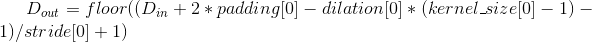
![H_{out} = floor((H_{in} + 2 * padding[1] - dilation[1] * (kernel_size[1] - 1) - 1) / stride[1] + 1)](../img/tex-89213fb2d0850f4cc41af72bae650bd0.gif)
变量：
weight (Tensor)– 卷积网络层间连接的权重, 是模型需要学习的变量, 形状为 (out_channels, in_channels, kernel_size[0], kernel_size[1], kernel_size[2])bias (Tensor)– 偏置, 是模型需要学习的变量, 形状为 (out_channels)
Examples:
>>> # With square kernels and equal stride
>>> m = nn.Conv3d(16, 33, 3, stride=2)
>>> # non-square kernels and unequal stride and with padding
>>> m = nn.Conv3d(16, 33, (3, 5, 2), stride=(2, 1, 1), padding=(4, 2, 0))
>>> input = autograd.Variable(torch.randn(20, 16, 10, 50, 100))
>>> output = m(input)
ConvTranspose1d
class torch.nn.ConvTranspose1d(in_channels, out_channels, kernel_size, stride=1, padding=0, output_padding=0, groups=1, bias=True, dilation=1)
一维反卷积层 反卷积层可以理解为输入的数据和卷积核的位置反转的卷积操作. 反卷积有时候也会被翻译成解卷积.
stride 计算相关系数的步长.padding 处理边界时在每个维度首尾补0数量.output_padding 输出时候在首尾补0的数量. (卷积时, 形状不同的输入数据
对相同的核函数可以产生形状相同的结果；反卷积时, 同一个输入对相同的核函数可以产生多 个形状不同的输出, 而输出结果只能有一个, 因此必须对输出形状进行约束）. | dilation 采样间隔数量. 大于1时为非致密采样. | groups 控制输入和输出之间的连接, group=1, 输出是所有输入的卷积； group=2, 此时 相当于有并排的两个卷基层, 每个卷积层只在对应的输入通道和输出通道之间计算, 并且输出时会将所有 输出通道简单的首尾相接作为结果输出.
in_channels和out_channels都要可以被 groups 整除.
注解：
数据的最后一列可能会因为 kernal 大小设定不当而被丢弃(大部分发生在 kernal 大小不能被输入 整除的时候, 适当的 padding 可以避免这个问题）.
参数：
in_channels (-)– 输入信号的通道数.out_channels (-)– 卷积后输出结果的通道数.kernel_size (-)– 卷积核的形状.stride (-)– 卷积每次移动的步长, 默认为1.padding (-)– 处理边界时填充0的数量, 默认为0(不填充).output_padding (-)– 输出时候在首尾补值的数量, 默认为0. (卷积时, 形状不同的输入数据同一个输入对相同的核函数可以产生多 (_对相同的核函数可以产生形状相同的结果；反卷积时_,)–- 而输出结果只能有一个, 因此必须对输出形状进行约束） (个形状不同的输出,) –
groups (-)– 输入与输出通道的分组数量. 当不为1时, 默认为1(全连接).bias (-)– 为True时, 添加偏置.dilation (-)– 采样间隔数量, 默认为1, 无间隔采样.
形状：
- 输入 Input:
- 输出 Output: 其中
变量：
weight (Tensor)– 卷积网络层间连接的权重, 是模型需要学习的变量, 形状为weight (Tensor): 卷积网络层间连接的权重, 是模型需要学习的变量, 形状为 (in_channels, out_channels, kernel_size[0], kernel_size[1])bias (Tensor)– 偏置, 是模型需要学习的变量, 形状为 (out_channels)
ConvTranspose2d
class torch.nn.ConvTranspose2d(in_channels, out_channels, kernel_size, stride=1, padding=0, output_padding=0, groups=1, bias=True, dilation=1)
二维反卷积层 反卷积层可以理解为输入的数据和卷积核的位置反转的卷积操作. 反卷积有时候也会被翻译成解卷积.
stride 计算相关系数的步长.padding 处理边界时在每个维度首尾补0数量.output_padding 输出时候在每一个维度首尾补0的数量. (卷积时, 形状不同的输入数据
对相同的核函数可以产生形状相同的结果；反卷积时, 同一个输入对相同的核函数可以产生多 个形状不同的输出, 而输出结果只能有一个, 因此必须对输出形状进行约束）. | dilation 采样间隔数量. 大于1时为非致密采样. | groups 控制输入和输出之间的连接, group=1, 输出是所有输入的卷积； group=2, 此时 相当于有并排的两个卷基层, 每个卷积层只在对应的输入通道和输出通道之间计算, 并且输出时会将所有 输出通道简单的首尾相接作为结果输出.
in_channels和out_channels都应当可以被 groups 整除.
kernel_size, stride, padding, output_padding 可以为:
- 单个
int值 – 宽和高均被设定为此值.- 由两个
int组成的tuple– 第一个int为高度, 第二个int为宽度.
注解：
数据的最后一列可能会因为 kernal 大小设定不当而被丢弃(大部分发生在 kernal 大小不能被输入 整除的时候, 适当的 padding 可以避免这个问题）.
参数：
in_channels (-)– 输入信号的通道数.out_channels (-)– 卷积后输出结果的通道数.kernel_size (-)– 卷积核的形状.stride (-)– 卷积每次移动的步长, 默认为1.padding (-)– 处理边界时填充0的数量, 默认为0(不填充).output_padding (-)– 输出时候在首尾补值的数量, 默认为0. (卷积时, 形状不同的输入数据同一个输入对相同的核函数可以产生多 (_对相同的核函数可以产生形状相同的结果；反卷积时_,)–- 而输出结果只能有一个, 因此必须对输出形状进行约束） (个形状不同的输出,) –
groups (-)– 输入与输出通道的分组数量. 当不为1时, 默认为1(全连接).bias (-)– 为True时, 添加偏置.dilation (-)– 采样间隔数量, 默认为1, 无间隔采样.
形状：
- 输入 Input:
- 输出 Output: 其中
![W_{out} = (W_{in} - 1) * stride[1] - 2 * padding[1] + kernel_size[1] + output_padding[1]](../img/tex-bc45574b44fdf01856bacfcd4abdeeba.gif)
变量：
weight (Tensor)– 卷积网络层间连接的权重, 是模型需要学习的变量, 形状为weight (Tensor): 卷积网络层间连接的权重, 是模型需要学习的变量, 形状为 (in_channels, out_channels, kernel_size[0], kernel_size[1])bias (Tensor)– 偏置, 是模型需要学习的变量, 形状为 (out_channels)
Examples:
>>> # With square kernels and equal stride
>>> m = nn.ConvTranspose2d(16, 33, 3, stride=2)
>>> # non-square kernels and unequal stride and with padding
>>> m = nn.ConvTranspose2d(16, 33, (3, 5), stride=(2, 1), padding=(4, 2))
>>> input = autograd.Variable(torch.randn(20, 16, 50, 100))
>>> output = m(input)
>>> # exact output size can be also specified as an argument
>>> input = autograd.Variable(torch.randn(1, 16, 12, 12))
>>> downsample = nn.Conv2d(16, 16, 3, stride=2, padding=1)
>>> upsample = nn.ConvTranspose2d(16, 16, 3, stride=2, padding=1)
>>> h = downsample(input)
>>> h.size()
torch.Size([1, 16, 6, 6])
>>> output = upsample(h, output_size=input.size())
>>> output.size()
torch.Size([1, 16, 12, 12])
ConvTranspose3d
class torch.nn.ConvTranspose3d(in_channels, out_channels, kernel_size, stride=1, padding=0, output_padding=0, groups=1, bias=True, dilation=1)
三维反卷积层 反卷积层可以理解为输入的数据和卷积核的位置反转的卷积操作. 反卷积有时候也会被翻译成解卷积.
stride 计算相关系数的步长.padding 处理边界时在每个维度首尾补0数量.output_padding 输出时候在每一个维度首尾补0的数量. (卷积时, 形状不同的输入数据
对相同的核函数可以产生形状相同的结果；反卷积时, 同一个输入对相同的核函数可以产生多 个形状不同的输出, 而输出结果只能有一个, 因此必须对输出形状进行约束） | dilation 采样间隔数量. 大于1时为非致密采样. | groups 控制输入和输出之间的连接, group=1, 输出是所有输入的卷积； group=2, 此时 相当于有并排的两个卷基层, 每个卷积层只在对应的输入通道和输出通道之间计算, 并且输出时会将所有 输出通道简单的首尾相接作为结果输出.
in_channels和out_channels都应当可以被 groups 整除.
kernel_size, stride, padding, output_padding 可以为:
- 单个
int值 – 深和宽和高均被设定为此值.- 由三个
int组成的tuple– 第一个int为深度, 第二个int为高度,第三个int为宽度.
注解：
数据的最后一列可能会因为 kernal 大小设定不当而被丢弃(大部分发生在 kernal 大小不能被输入 整除的时候, 适当的 padding 可以避免这个问题）.
参数：
in_channels (-)– 输入信号的通道数.out_channels (-)– 卷积后输出结果的通道数.kernel_size (-)– 卷积核的形状.stride (-)– 卷积每次移动的步长, 默认为1.padding (-)– 处理边界时填充0的数量, 默认为0(不填充).output_padding (-)– 输出时候在首尾补值的数量, 默认为0. (卷积时, 形状不同的输入数据同一个输入对相同的核函数可以产生多 (_对相同的核函数可以产生形状相同的结果；反卷积时_,)–- 而输出结果只能有一个, 因此必须对输出形状进行约束） (个形状不同的输出,) –
groups (-)– 输入与输出通道的分组数量. 当不为1时, 默认为1(全连接).bias (-)– 为True时, 添加偏置.dilation (-)– 采样间隔数量, 默认为1, 无间隔采样.
形状：
- 输入 Input:
- 输出 Output: 其中 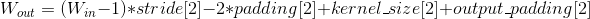
变量：
- 是模型需要学习的变量, 形状为weight (卷积网络层间连接的权重,) – 卷积网络层间连接的权重, 是模型需要学习的变量, 形状为 (in_channels, out_channels, kernel_size[0], kernel_size[1], kernel_size[2])
bias (Tensor)– 偏置, 是模型需要学习的变量, 形状为 (out_channels)
Examples:
>>> # With square kernels and equal stride
>>> m = nn.ConvTranspose3d(16, 33, 3, stride=2)
>>> # non-square kernels and unequal stride and with padding
>>> m = nn.Conv3d(16, 33, (3, 5, 2), stride=(2, 1, 1), padding=(0, 4, 2))
>>> input = autograd.Variable(torch.randn(20, 16, 10, 50, 100))
>>> output = m(input)
Pooling Layers (池化层)
MaxPool1d
class torch.nn.MaxPool1d(kernel_size, stride=None, padding=0, dilation=1, return_indices=False, ceil_mode=False)
对于多个输入通道组成的输入信号,应用一维的最大池化 max pooling 操作
最简单的例子, 如果输入大小为  , 输出大小为
, 输出大小为  , 该层输出值可以用下式精确计算:
, 该层输出值可以用下式精确计算:
如果 padding 不是0,那么在输入数据的每条边上会隐式填补对应 padding 数量的0值点dilation 用于控制内核点之间的间隔, link 很好地可视化展示了 dilation 的功能
参数：
kernel_size– 最大池化操作时的窗口大小stride– 最大池化操作时窗口移动的步长, 默认值是kernel_sizepadding– 输入的每条边隐式补0的数量dilation– 用于控制窗口中元素的步长的参数return_indices– 如果等于True, 在返回 max pooling 结果的同时返回最大值的索引. 这在之后的 Unpooling 时很有用ceil_mode– 如果等于True, 在计算输出大小时,将采用向上取整来代替默认的向下取整的方式
形状：
- 输入：

- 输出： 遵从如下关系
Examples:
>>> # pool of size=3, stride=2
>>> m = nn.MaxPool1d(3, stride=2)
>>> input = autograd.Variable(torch.randn(20, 16, 50))
>>> output = m(input)
MaxPool2d
class torch.nn.MaxPool2d(kernel_size, stride=None, padding=0, dilation=1, return_indices=False, ceil_mode=False)
对于多个输入通道组成的输入信号,应用二维的最大池化 max pooling 操作
最简单的例子, 如果输入大小为  , 输出大小为
, 输出大小为  , 池化窗口大小
, 池化窗口大小 kernel_size 为  该层输出值可以用下式精确计算:
该层输出值可以用下式精确计算:
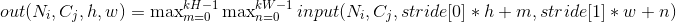
如果 padding 不是0, 那么在输入数据的每条边上会隐式填补对应 padding 数量的0值点dilation 用于控制内核点之间的间隔, link 很好地可视化展示了 dilation 的功能
参数 kernel_size, stride, padding, dilation 可以是以下任意一种数据类型:
- 单个
int类型数据 – 此时在 height 和 width 维度上将使用相同的值- 包含两个 int 类型数据的
tuple元组 – 此时第一个int数据表示 height 维度上的数值, 第二个int数据表示 width 维度上的数值
参数：
kernel_size– 最大池化操作时的窗口大小stride– 最大池化操作时窗口移动的步长, 默认值是kernel_sizepadding– 输入的每条边隐式补0的数量dilation– 用于控制窗口中元素的步长的参数return_indices– 如果等于True, 在返回 max pooling 结果的同时返回最大值的索引 这在之后的 Unpooling 时很有用ceil_mode– 如果等于True, 在计算输出大小时,将采用向上取整来代替默认的向下取整的方式
形状：
- 输入：

- 输出： 遵从如下关系
Examples:
>>> # pool of square window of size=3, stride=2
>>> m = nn.MaxPool2d(3, stride=2)
>>> # pool of non-square window
>>> m = nn.MaxPool2d((3, 2), stride=(2, 1))
>>> input = autograd.Variable(torch.randn(20, 16, 50, 32))
>>> output = m(input)
MaxPool3d
class torch.nn.MaxPool3d(kernel_size, stride=None, padding=0, dilation=1, return_indices=False, ceil_mode=False)
对于多个输入通道组成的输入信号,应用三维的最大池化 max pooling 操作
最简单的例子, 如果输入大小为  ,输出大小为
,输出大小为  池化窗口大小
池化窗口大小 kernel_size 为 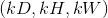 该层输出值可以用下式精确计算:
如果 padding 不是0, 那么在输入数据的每条边上会隐式填补对应 padding 数量的0值点dilation 用于控制内核点之间的间隔, link 很好地可视化展示了 dilation 的功能
参数 kernel_size, stride, padding, dilation 可以是以下任意一种数据类型:
- 单个
int类型数据 – 此时在 depth, height 和 width 维度上将使用相同的值- 包含三个 int 类型数据的
tuple元组 – 此时第一个int数据表示 depth 维度上的数值, 第二个int数据表示 height 维度上的数值,第三个int数据表示 width 维度上的数值
参数：
kernel_size– 最大池化操作时的窗口大小stride– 最大池化操作时窗口移动的步长, 默认值是kernel_sizepadding– 输入所有三条边上隐式补0的数量dilation– 用于控制窗口中元素的步长的参数return_indices– 如果等于True, 在返回 max pooling 结果的同时返回最大值的索引 这在之后的 Unpooling 时很有用ceil_mode– 如果等于True, 在计算输出大小时,将采用向上取整来代替默认的向下取整的方式
形状：
- 输入：

- 输出： 遵从如下关系
Examples:
>>> # pool of square window of size=3, stride=2
>>> m = nn.MaxPool3d(3, stride=2)
>>> # pool of non-square window
>>> m = nn.MaxPool3d((3, 2, 2), stride=(2, 1, 2))
>>> input = autograd.Variable(torch.randn(20, 16, 50,44, 31))
>>> output = m(input)
MaxUnpool1d
class torch.nn.MaxUnpool1d(kernel_size, stride=None, padding=0)
MaxPool1d 的逆过程
要注意的是 MaxPool1d 并不是完全可逆的, 因为在max pooling过程中非最大值已经丢失
MaxUnpool1d 以 MaxPool1d 的输出, 包含最大值的索引作为输入 计算max poooling的部分逆过程(对于那些最大值区域), 对于那些非最大值区域将设置为0值
注解：
MaxPool1d 可以将多个输入大小映射到相同的输出大小, 因此反演过程可能会模棱两可 为适应这一点, 在调用forward函数时可以将需要的输出大小作为额外的参数 output_size 传入.
� 具体用法,请参阅下面的输入和示例
参数：
kernel_size (int 或 tuple)– 最大池化操作时的窗口大小stride (int 或 tuple)– 最大池化操作时窗口移动的步长, 默认值是kernel_sizepadding (int 或 tuple)– 输入的每条边填充0值的个数
Inputs:
input: 需要转化的输入的 Tensorindices:MaxPool1d提供的最大值索引output_size(可选) :torch.Size类型的数据指定输出的大小
形状：
- 输入：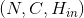
- 输出：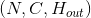 遵从如下关系
![H_{out} = (H_{in} - 1) * stride[0] - 2 * padding[0] + kernel_size[0]](../img/tex-3e4cc86575ff480ad4c4141a89f2b470.gif) 或者在调用时指定输出大小
或者在调用时指定输出大小 output_size
示例：
>>> pool = nn.MaxPool1d(2, stride=2, return_indices=True)
>>> unpool = nn.MaxUnpool1d(2, stride=2)
>>> input = Variable(torch.Tensor([[[1, 2, 3, 4, 5, 6, 7, 8]]]))
>>> output, indices = pool(input)
>>> unpool(output, indices)
Variable containing:
(0 ,.,.) =
0 2 0 4 0 6 0 8
[torch.FloatTensor of size 1x1x8]
>>> # Example showcasing the use of output_size
>>> input = Variable(torch.Tensor([[[1, 2, 3, 4, 5, 6, 7, 8, 9]]]))
>>> output, indices = pool(input)
>>> unpool(output, indices, output_size=input.size())
Variable containing:
(0 ,.,.) =
0 2 0 4 0 6 0 8 0
[torch.FloatTensor of size 1x1x9]
>>> unpool(output, indices)
Variable containing:
(0 ,.,.) =
0 2 0 4 0 6 0 8
[torch.FloatTensor of size 1x1x8]
MaxUnpool2d
class torch.nn.MaxUnpool2d(kernel_size, stride=None, padding=0)
MaxPool2d 的逆过程
要注意的是 MaxPool2d 并不是完全可逆的, 因为在max pooling过程中非最大值已经丢失
MaxUnpool2d 以 MaxPool2d 的输出, 包含最大值的索引作为输入 计算max poooling的部分逆过程(对于那些最大值区域), 对于那些非最大值区域将设置为0值
注解：
MaxPool2d 可以将多个输入大小映射到相同的输出大小, 因此反演过程可能会模棱两可. 为适应这一点, 在调用forward函数时可以将需要的输出大小作为额外的参数 output_size 传入.
� 具体用法,请参阅下面的输入和示例
参数：
kernel_size (int 或 tuple)– 最大池化操作时的窗口大小stride (int 或 tuple)– 最大池化操作时窗口移动的步长, 默认值是kernel_sizepadding (int 或 tuple)– 输入的每条边填充0值的个数
Inputs:
input: 需要转化的输入的 Tensorindices:MaxPool2d提供的最大值索引output_size(可选) :torch.Size类型的数据指定输出的大小
形状：
- 输入：
- 输出： 遵从如下关系
![H_{out} = (H_{in} - 1) * stride[0] -2 * padding[0] + kernel_size[0]](../img/tex-bc6952442952352a9c45fd1615b9c8ab.gif) 或者在调用时指定输出大小
或者在调用时指定输出大小 output_size
示例：
>>> pool = nn.MaxPool2d(2, stride=2, return_indices=True)
>>> unpool = nn.MaxUnpool2d(2, stride=2)
>>> input = Variable(torch.Tensor([[[[ 1, 2, 3, 4],
... [ 5, 6, 7, 8],
... [ 9, 10, 11, 12],
... [13, 14, 15, 16]]]]))
>>> output, indices = pool(input)
>>> unpool(output, indices)
Variable containing:
(0 ,0 ,.,.) =
0 0 0 0
0 6 0 8
0 0 0 0
0 14 0 16
[torch.FloatTensor of size 1x1x4x4]
>>> # specify a different output size than input size
>>> unpool(output, indices, output_size=torch.Size([1, 1, 5, 5]))
Variable containing:
(0 ,0 ,.,.) =
0 0 0 0 0
6 0 8 0 0
0 0 0 14 0
16 0 0 0 0
0 0 0 0 0
[torch.FloatTensor of size 1x1x5x5]
MaxUnpool3d
class torch.nn.MaxUnpool3d(kernel_size, stride=None, padding=0)
MaxPool3d 的逆过程
要注意的是 MaxPool3d 并不是完全可逆的, 因为在max pooling过程中非最大值已经丢失 MaxUnpool3d 以 MaxPool3d 的输出, 包含最大值的索引作为输入 计算max poooling的部分逆过程(对于那些最大值区域), 对于那些非最大值区域将设置为0值
注解：
MaxPool3d 可以将多个输入大小映射到相同的输出大小, 因此反演过程可能会模棱两可. 为适应这一点, 在调用forward函数时可以将需要的输出大小作为额外的参数 output_size 传入.
� 具体用法,请参阅下面的输入和示例
参数：
kernel_size (int 或 tuple)– 最大池化操作时的窗口大小stride (int 或 tuple)– 最大池化操作时窗口移动的步长, 默认值是kernel_sizepadding (int 或 tuple)– 输入的每条边填充0值的个数
Inputs:
input: 需要转化的输入的 Tensorindices:MaxPool3d提供的最大值索引output_size(可选) :torch.Size类型的数据指定输出的大小
形状：
- 输入：
- 输出： 遵从如下关系
![H_{out} = (H_{in} - 1) * stride[1] - 2 * padding[1] + kernel_size[1]](../img/tex-f359d5e863d259e3983a5b5c33f30f38.gif) 或者在调用时指定输出大小
或者在调用时指定输出大小 output_size
示例：
>>> # pool of square window of size=3, stride=2
>>> pool = nn.MaxPool3d(3, stride=2, return_indices=True)
>>> unpool = nn.MaxUnpool3d(3, stride=2)
>>> output, indices = pool(Variable(torch.randn(20, 16, 51, 33, 15)))
>>> unpooled_output = unpool(output, indices)
>>> unpooled_output.size()
torch.Size([20, 16, 51, 33, 15])
AvgPool1d
class torch.nn.AvgPool1d(kernel_size, stride=None, padding=0, ceil_mode=False, count_include_pad=True)
对于多个输入通道组成的输入信号,应用一维的平均池化 average pooling 操作
最简单的例子, 如果输入大小为 , 输出大小为 , 池化窗口大小 kernel_size 为  该层输出值可以用下式精确计算:
该层输出值可以用下式精确计算:
如果 padding 不是0, 那么在输入数据的每条边上会隐式填补对应 padding 数量的0值点
参数 kernel_size, stride, padding 可以为单个 int 类型的数据 或者是一个单元素的tuple元组
参数：
kernel_size– 平均池化操作时取平均值的窗口的大小stride– 平均池化操作时窗口移动的步长, 默认值是kernel_sizepadding– 输入的每条边隐式补0的数量ceil_mode– 如果等于True, 在计算输出大小时,将采用向上取整来代替默认的向下取整的方式count_include_pad– 如果等于True, 在计算平均池化的值时,将考虑padding填充的0
形状：
- 输入：
- 输出： 遵从如下关系

Examples:
>>> # pool with window of size=3, stride=2
>>> m = nn.AvgPool1d(3, stride=2)
>>> m(Variable(torch.Tensor([[[1,2,3,4,5,6,7]]])))
Variable containing:
(0 ,.,.) =
2 4 6
[torch.FloatTensor of size 1x1x3]
AvgPool2d
class torch.nn.AvgPool2d(kernel_size, stride=None, padding=0, ceil_mode=False, count_include_pad=True)
对于多个输入通道组成的输入信号,应用二维的平均池化 average pooling 操作
最简单的例子,如果输入大小为 ,输出大小为 , 池化窗口大小 kernel_size 为 该层输出值可以用下式精确计算:
![\begin{array}{ll} out(N_i, C_j, h, w) = 1 / (kH * kW) * \sum_{m=0}^{kH-1} \sum_{n=0}^{kW-1} input(N_i, C_j, stride[0] * h + m, stride[1] * w + n) \end{array}](../img/tex-83e390b13d2c73927b15f35344142d36.gif)
如果 padding 不是0, 那么在输入数据的每条边上会隐式填补对应 padding 数量的0值点
参数 kernel_size, stride, padding 可以是以下任意一种数据类型:
- 单个
int类型数据 – 此时在 height 和 width 维度上将使用相同的值- 包含两个 int 类型数据的
tuple元组 – 此时第一个int数据表示 height 维度上的数值, 第二个int数据表示 width 维度上的数值
参数：
kernel_size– 平均池化操作时取平均值的窗口的大小stride– 平均池化操作时窗口移动的步长, 默认值是kernel_sizepadding– 输入的每条边隐式补0的数量ceil_mode– 如果等于True, 在计算输出大小时,将采用向上取整来代替默认的向下取整的方式count_include_pad– 如果等于True, 在计算平均池化的值时,将考虑padding填充的0
形状：
- 输入：
- 输出： 遵从如下关系
![H_{out} = floor((H_{in} + 2 * padding[0] - kernel_size[0]) / stride[0] + 1)](../img/tex-741bce32e0f25e0789dd133c8f7efabd.gif)
Examples:
>>> # pool of square window of size=3, stride=2
>>> m = nn.AvgPool2d(3, stride=2)
>>> # pool of non-square window
>>> m = nn.AvgPool2d((3, 2), stride=(2, 1))
>>> input = autograd.Variable(torch.randn(20, 16, 50, 32))
>>> output = m(input)
AvgPool3d
class torch.nn.AvgPool3d(kernel_size, stride=None, padding=0, ceil_mode=False, count_include_pad=True)
对于多个输入通道组成的输入信号,应用三维的平均池化 average pooling 操作
最简单的例子, 如果输入大小为 ,输出大小为 池化窗口大小 kernel_size 为 该层输出值可以用下式精确计算:
如果 padding 不是0, 那么在输入数据的每条边上会隐式填补对应 padding 数量的0值点
参数 kernel_size, stride 可以是以下任意一种数据类型:
- 单个
int类型数据 – 此时在 depth, height 和 width 维度上将使用相同的值- 包含三个 int 类型数据的
tuple元组 – 此时第一个int数据表示 depth 维度上的数值, 第二个int数据表示 height 维度上的数值,第三个int数据表示 width 维度上的数值
参数：
kernel_size– 平均池化操作时取平均值的窗口的大小stride– 平均池化操作时窗口移动的步长, 默认值是kernel_sizepadding– 输入的每条边隐式补0的数量ceil_mode– 如果等于True, 在计算输出大小时,将采用向上取整来代替默认的向下取整的方式count_include_pad– 如果等于True, 在计算平均池化的值时,将考虑padding填充的0
形状：
- 输入：
- 输出： 遵从如下关系 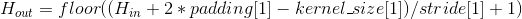 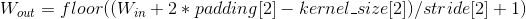
Examples:
>>> # pool of square window of size=3, stride=2
>>> m = nn.AvgPool3d(3, stride=2)
>>> # pool of non-square window
>>> m = nn.AvgPool3d((3, 2, 2), stride=(2, 1, 2))
>>> input = autograd.Variable(torch.randn(20, 16, 50,44, 31))
>>> output = m(input)
FractionalMaxPool2d
class torch.nn.FractionalMaxPool2d(kernel_size, output_size=None, output_ratio=None, return_indices=False, _random_samples=None)
对于多个输入通道组成的输入信号,应用二维的分数最大池化 fractional max pooling 操作
分数最大池化 Fractiona MaxPooling 的具体细节描述,详见Ben Graham论文 Fractional MaxPooling
由目标输出大小确定随机步长,在 kH x kW 区域内进行最大池化的操作 输出特征的数量与输入通道的数量相同
参数：
kernel_size– 最大池化操作时窗口的大小. 可以是单个数字 k (等价于 k x k 的正方形窗口) 或者是 一个元组 tuple (kh x kw)output_size– oH x oW 形式的输出图像的尺寸. 可以用 一个 tuple 元组 (oH, oW) 表示 oH x oW 的输出尺寸, 或者是单个的数字 oH 表示 oH x oH 的输出尺寸output_ratio– 如果想用输入图像的百分比来指定输出图像的大小,可选用该选项. 使用范围在 (0,1) 之间的一个值来指定.return_indices– 如果等于True,在返回输出结果的同时返回最大值的索引,该索引对 nn.MaxUnpool2d 有用. 默认情况下该值等于False
示例：
>>> # pool of square window of size=3, and target output size 13x12
>>> m = nn.FractionalMaxPool2d(3, output_size=(13, 12))
>>> # pool of square window and target output size being half of input image size
>>> m = nn.FractionalMaxPool2d(3, output_ratio=(0.5, 0.5))
>>> input = autograd.Variable(torch.randn(20, 16, 50, 32))
>>> output = m(input)
LPPool2d
class torch.nn.LPPool2d(norm_type, kernel_size, stride=None, ceil_mode=False)
对于多个输入通道组成的输入信号,应用二维的幂平均池化 power-average pooling 操作
在每个窗口内, 输出的计算方式: 
- 当 p 无穷大时,等价于最大池化
Max Pooling操作- 当
p=1时, 等价于平均池化Average Pooling操作
参数 kernel_size, stride 可以是以下任意一种数据类型:
- 单个
int类型数据 – 此时在height和width维度上将使用相同的值- 包含两个 int 类型数据的
tuple元组 – 此时第一个int数据表示 height 维度上的数值, 第二个int数据表示 width 维度上的数值
参数：
kernel_size– 幂平均池化时窗口的大小stride– 幂平均池化操作时窗口移动的步长, 默认值是kernel_sizeceil_mode– 如果等于True, 在计算输出大小时,将采用向上取整来代替默认的向下取整的方式
形状：
- 输入：
- 输出： 遵从如下关系
Examples:
>>> # power-2 pool of square window of size=3, stride=2
>>> m = nn.LPPool2d(2, 3, stride=2)
>>> # pool of non-square window of power 1.2
>>> m = nn.LPPool2d(1.2, (3, 2), stride=(2, 1))
>>> input = autograd.Variable(torch.randn(20, 16, 50, 32))
>>> output = m(input)
AdaptiveMaxPool1d
class torch.nn.AdaptiveMaxPool1d(output_size, return_indices=False)
对于多个输入通道组成的输入信号,应用一维的自适应最大池化 adaptive max pooling 操作
对于任意大小的输入,可以指定输出的尺寸为 H 输出特征的数量与输入通道的数量相同.
参数：
output_size– 目标输出的尺寸 Hreturn_indices– 如果等于True,在返回输出结果的同时返回最大值的索引,该索引对 nn.MaxUnpool1d 有用. 默认情况下该值等于False
示例：
>>> # target output size of 5
>>> m = nn.AdaptiveMaxPool1d(5)
>>> input = autograd.Variable(torch.randn(1, 64, 8))
>>> output = m(input)
AdaptiveMaxPool2d
class torch.nn.AdaptiveMaxPool2d(output_size, return_indices=False)
对于多个输入通道组成的输入信号,应用二维的自适应最大池化 adaptive max pooling 操作
对于任意大小的输入,可以指定输出的尺寸为 H x W 输出特征的数量与输入通道的数量相同.
参数：
output_size– H x W 形式的输出图像的尺寸. 可以用 一个 tuple 元组 (H, W) 表示 H x W 的输出尺寸, 或者是单个的数字 H 表示 H x H 的输出尺寸return_indices– 如果等于True,在返回输出结果的同时返回最大值的索引,该索引对 nn.MaxUnpool2d 有用. 默认情况下该值等于False
示例：
>>> # target output size of 5x7
>>> m = nn.AdaptiveMaxPool2d((5,7))
>>> input = autograd.Variable(torch.randn(1, 64, 8, 9))
>>> output = m(input)
>>> # target output size of 7x7 (square)
>>> m = nn.AdaptiveMaxPool2d(7)
>>> input = autograd.Variable(torch.randn(1, 64, 10, 9))
>>> output = m(input)
AdaptiveMaxPool3d
class torch.nn.AdaptiveMaxPool3d(output_size, return_indices=False)
对于多个输入通道组成的输入信号,应用三维的自适应最大池化 adaptive max pooling 操作
对于任意大小的输入,可以指定输出的尺寸为 D x H x W 输出特征的数量与输入通道的数量相同.
参数：
output_size– D x H x W 形式的输出图像的尺寸. 可以用 一个 tuple 元组 (D, H, W) 表示 D x H x W 的输出尺寸, 或者是单个的数字 D 表示 D x D x D 的输出尺寸return_indices– 如果等于True,在返回输出结果的同时返回最大值的索引,该索引对 nn.MaxUnpool3d 有用. 默认情况下该值等于False
示例：
>>> # target output size of 5x7x9
>>> m = nn.AdaptiveMaxPool3d((5,7,9))
>>> input = autograd.Variable(torch.randn(1, 64, 8, 9, 10))
>>> output = m(input)
>>> # target output size of 7x7x7 (cube)
>>> m = nn.AdaptiveMaxPool3d(7)
>>> input = autograd.Variable(torch.randn(1, 64, 10, 9, 8))
>>> output = m(input)
AdaptiveAvgPool1d
class torch.nn.AdaptiveAvgPool1d(output_size)
对于多个输入通道组成的输入信号,应用一维的自适应平均池化 adaptive average pooling 操作
对于任意大小的输入,可以指定输出的尺寸为 H 输出特征的数量与输入通道的数量相同.
参数：output_size – 目标输出的尺寸 H
示例：
>>> # target output size of 5
>>> m = nn.AdaptiveAvgPool1d(5)
>>> input = autograd.Variable(torch.randn(1, 64, 8))
>>> output = m(input)
AdaptiveAvgPool2d
class torch.nn.AdaptiveAvgPool2d(output_size)
对于多个输入通道组成的输入信号,应用二维的自适应平均池化 adaptive average pooling 操作
对于任意大小的输入,可以指定输出的尺寸为 H x W 输出特征的数量与输入通道的数量相同.
参数：output_size – H x W 形式的输出图像的尺寸. 可以用 一个 tuple 元组 (H, W) 表示 H x W 的输出尺寸, 或者是单个的数字 H 表示 H x H 的输出尺寸
示例：
>>> # target output size of 5x7
>>> m = nn.AdaptiveAvgPool2d((5,7))
>>> input = autograd.Variable(torch.randn(1, 64, 8, 9))
>>> output = m(input)
>>> # target output size of 7x7 (square)
>>> m = nn.AdaptiveAvgPool2d(7)
>>> input = autograd.Variable(torch.randn(1, 64, 10, 9))
>>> output = m(input)
AdaptiveAvgPool3d
class torch.nn.AdaptiveAvgPool3d(output_size)
对于多个输入通道组成的输入信号,应用三维的自适应平均池化 adaptive average pooling 操作
对于任意大小的输入,可以指定输出的尺寸为 D x H x W 输出特征的数量与输入通道的数量相同.
参数：output_size – D x H x W 形式的输出图像的尺寸. 可以用 一个 tuple 元组 (D, H, W) 表示 D x H x W 的输出尺寸, 或者是单个的数字 D 表示 D x D x D 的输出尺寸
示例：
>>> # target output size of 5x7x9
>>> m = nn.AdaptiveAvgPool3d((5,7,9))
>>> input = autograd.Variable(torch.randn(1, 64, 8, 9, 10))
>>> output = m(input)
>>> # target output size of 7x7x7 (cube)
>>> m = nn.AdaptiveAvgPool3d(7)
>>> input = autograd.Variable(torch.randn(1, 64, 10, 9, 8))
>>> output = m(input)
Padding Layers (填充层)
ReflectionPad2d
class torch.nn.ReflectionPad2d(padding)
使用输入边界的反射填充输入张量.
参数：
padding (int, tuple)– 填充的大小. 如果是int, 则在所有边界填充使用相同的.则使用 (_如果是4个元组_,)–
形状：
- 输入：
- 输出： where

示例：
>>> m = nn.ReflectionPad2d(3)
>>> input = autograd.Variable(torch.randn(16, 3, 320, 480))
>>> output = m(input)
>>> # 使用不同的填充
>>> m = nn.ReflectionPad2d((3, 3, 6, 6))
>>> output = m(input)
ReplicationPad2d
class torch.nn.ReplicationPad2d(padding)
使用输入边界的复制填充输入张量.
参数：padding (int, tuple) – 填充的大小. 如果是int, 则在所有边界使用相同的填充. 如果是4个元组, 则使用(paddingLeft, paddingRight, paddingTop, paddingBottom)
形状：
- 输入：
- 输出： where
示例：
>>> m = nn.ReplicationPad2d(3)
>>> input = autograd.Variable(torch.randn(16, 3, 320, 480))
>>> output = m(input)
>>> # 使用不同的填充
>>> m = nn.ReplicationPad2d((3, 3, 6, 6))
>>> output = m(input)
ReplicationPad3d
class torch.nn.ReplicationPad3d(padding)
使用输入边界的复制填充输入张量.
参数：
padding (int, tuple)– 填充的大小. 如果是int, 则在所有边界使用相同的填充.则使用 (paddingLeft, paddingRight, (_如果是四个元组_,)–- paddingBottom, paddingFront, paddingBack) (paddingTop,) –
形状：
- 输入：
- 输出： where

示例：
>>> m = nn.ReplicationPad3d(3)
>>> input = autograd.Variable(torch.randn(16, 3, 8, 320, 480))
>>> output = m(input)
>>> # 使用不同的填充
>>> m = nn.ReplicationPad3d((3, 3, 6, 6, 1, 1))
>>> output = m(input)
ZeroPad2d
class torch.nn.ZeroPad2d(padding)
用零填充输入张量边界.
参数：
padding (int, tuple)– 填充的大小. 如果是int, 则在所有边界使用相同的填充.
形状：
- 输入：
- 输出： where
示例：
>>> m = nn.ZeroPad2d(3)
>>> input = autograd.Variable(torch.randn(16, 3, 320, 480))
>>> output = m(input)
>>> # 使用不同的填充
>>> m = nn.ZeroPad2d((3, 3, 6, 6))
>>> output = m(input)
ConstantPad2d
class torch.nn.ConstantPad2d(padding, value)
用一个常数值填充输入张量边界.
对于 Nd-padding, 使用 nn.functional.pad().
参数：
padding (int, tuple)– 填充的大小. 如果是int, 则在所有边界使用相同的填充.value–
形状：
- 输入：
- 输出： where
示例：
>>> m = nn.ConstantPad2d(3, 3.5)
>>> input = autograd.Variable(torch.randn(16, 3, 320, 480))
>>> output = m(input)
>>> # 使用不同的填充
>>> m = nn.ConstantPad2d((3, 3, 6, 6), 3.5)
>>> output = m(input)
Non-linear Activations (非线性层)
ReLU
class torch.nn.ReLU(inplace=False)
对输入运用修正线性单元函数 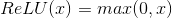
参数：inplace – 选择是否进行覆盖运算 Default: False
形状：
- 输入：

*代表任意数目附加维度 - 输出：, 与输入拥有同样的 shape 属性
Examples:
>>> m = nn.ReLU()
>>> input = autograd.Variable(torch.randn(2))
>>> print(input)
>>> print(m(input))
ReLU6
class torch.nn.ReLU6(inplace=False)
对输入的每一个元素运用函数 
参数：inplace – 选择是否进行覆盖运算 默认值: False
形状：
- 输入：,
*代表任意数目附加维度 - 输出：, 与输入拥有同样的 shape 属性
Examples:
>>> m = nn.ReLU6()
>>> input = autograd.Variable(torch.randn(2))
>>> print(input)
>>> print(m(input))
ELU
class torch.nn.ELU(alpha=1.0, inplace=False)
对输入的每一个元素运用函数, 
参数：
alpha– ELU 定义公式中的 alpha 值. 默认值: 1.0inplace– 选择是否进行覆盖运算 默认值:False
形状：
- 输入：
*代表任意数目附加维度 - 输出：, 与输入拥有同样的 shape 属性
Examples:
>>> m = nn.ELU()
>>> input = autograd.Variable(torch.randn(2))
>>> print(input)
>>> print(m(input))
SELU
class torch.nn.SELU(inplace=False)
对输入的每一个元素运用函数, , alpha=1.6732632423543772848170429916717, scale=1.0507009873554804934193349852946.
更多地细节可以参阅论文 Self-Normalizing Neural Networks .
参数：inplace (bool, 可选) – 选择是否进行覆盖运算. 默认值: False
形状：
- 输入： where
*means, any number of additional dimensions - 输出：, same shape as the input
Examples:
>>> m = nn.SELU()
>>> input = autograd.Variable(torch.randn(2))
>>> print(input)
>>> print(m(input))
PReLU
class torch.nn.PReLU(num_parameters=1, init=0.25)
对输入的每一个元素运用函数  这里的 “a” 是自学习的参数. 当不带参数地调用时, nn.PReLU() 在所有输入通道中使用单个参数 “a” . 而如果用 nn.PReLU(nChannels) 调用, “a” 将应用到每个输入.
这里的 “a” 是自学习的参数. 当不带参数地调用时, nn.PReLU() 在所有输入通道中使用单个参数 “a” . 而如果用 nn.PReLU(nChannels) 调用, “a” 将应用到每个输入.
注解：
当为了表现更佳的模型而学习参数 “a” 时不要使用权重衰减 (weight decay)
参数：
num_parameters– 需要学习的 “a” 的个数. 默认等于1init– “a” 的初始值. 默认等于0.25
形状：
- 输入： 其中
*代表任意数目的附加维度 - 输出：, 和输入的格式 shape 一致
例:
>>> m = nn.PReLU()
>>> input = autograd.Variable(torch.randn(2))
>>> print(input)
>>> print(m(input))
LeakyReLU
class torch.nn.LeakyReLU(negative_slope=0.01, inplace=False)
对输入的每一个元素运用, 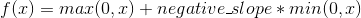
参数：
negative_slope– 控制负斜率的角度, 默认值: 1e-2inplace– 选择是否进行覆盖运算 默认值:False
形状：
- 输入： 其中
*代表任意数目的附加维度 - 输出：, 和输入的格式shape一致
例:
>>> m = nn.LeakyReLU(0.1)
>>> input = autograd.Variable(torch.randn(2))
>>> print(input)
>>> print(m(input))
Threshold
class torch.nn.Threshold(threshold, value, inplace=False)
基于 Tensor 中的每个元素创造阈值函数
Threshold 被定义为
y = x if x > threshold
value if x <= threshold
参数：
threshold– 阈值value– 输入值小于阈值则会被 value 代替inplace– 选择是否进行覆盖运算. 默认值:False
形状：
- 输入： 其中
*代表任意数目的附加维度 - 输出：, 和输入的格式 shape 一致
例:
>>> m = nn.Threshold(0.1, 20)
>>> input = Variable(torch.randn(2))
>>> print(input)
>>> print(m(input))
Hardtanh
class torch.nn.Hardtanh(min_val=-1, max_val=1, inplace=False, min_value=None, max_value=None)
对输入的每一个元素运用 HardTanh
HardTanh 被定义为:
f(x) = +1, if x > 1
f(x) = -1, if x < -1
f(x) = x, otherwise
线性区域的范围 ![[-1, 1]](../img/tex-7dec1d46e68831c4eca28b020fcb1604.gif) 可以被调整
可以被调整
参数：
min_val– 线性区域范围最小值. 默认值: -1max_val– 线性区域范围最大值. 默认值: 1inplace– 选择是否进行覆盖运算. 默认值:False
关键字参数 min_value 以及 max_value 已被弃用. 更改为 min_val 和 max_val
形状：
- 输入： 其中
*代表任意维度组合 - 输出：, 与输入有相同的 shape 属性
例
>>> m = nn.Hardtanh(-2, 2)
>>> input = autograd.Variable(torch.randn(2))
>>> print(input)
>>> print(m(input))
Sigmoid
class torch.nn.Sigmoid
对每个元素运用 Sigmoid 函数. Sigmoid 定义如下 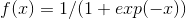
形状：
- 输入：
*表示任意维度组合 - 输出：, 与输入有相同的 shape 属性
Examples:
>>> m = nn.Sigmoid()
>>> input = autograd.Variable(torch.randn(2))
>>> print(input)
>>> print(m(input))
Tanh
class torch.nn.Tanh
对输入的每个元素, 
形状：
- 输入：
*表示任意维度组合 - 输出：, 与输入有相同的 shape 属性
Examples:
>>> m = nn.Tanh()
>>> input = autograd.Variable(torch.randn(2))
>>> print(input)
>>> print(m(input))
LogSigmoid
class torch.nn.LogSigmoid
对输入的每一个元素运用函数
形状：
- 输入： 其中
*代表任意数目的附加维度 - 输出：, 和输入的格式shape一致
例:
>>> m = nn.LogSigmoid()
>>> input = autograd.Variable(torch.randn(2))
>>> print(input)
>>> print(m(input))
Softplus
class torch.nn.Softplus(beta=1, threshold=20)
对每个元素运用Softplus函数, Softplus 定义如下 :: 
Softplus 函数是ReLU函数的平滑逼近. Softplus 函数可以使得输出值限定为正数.
为了保证数值稳定性. 线性函数的转换可以使输出大于某个值.
参数：
beta– Softplus 公式中的 beta 值. 默认值: 1threshold– 阈值. 当输入到该值以上时我们的SoftPlus实现将还原为线性函数. 默认值: 20
形状：
- 输入： 其中
*代表任意数目的附加维度 dimensions - 输出：, 和输入的格式shape一致
例:
>>> m = nn.Softplus()
>>> input = autograd.Variable(torch.randn(2))
>>> print(input)
>>> print(m(input))
Softshrink
class torch.nn.Softshrink(lambd=0.5)
对输入的每一个元素运用 soft shrinkage 函数
SoftShrinkage 运算符定义为:
f(x) = x-lambda, if x > lambda > f(x) = x+lambda, if x < -lambda
f(x) = 0, otherwise
参数：lambd – Softshrink 公式中的 lambda 值. 默认值: 0.5
形状：
- 输入： 其中
*代表任意数目的附加维度 - 输出：, 和输入的格式 shape 一致
例:
>>> m = nn.Softshrink()
>>> input = autograd.Variable(torch.randn(2))
>>> print(input)
>>> print(m(input))
Softsign
class torch.nn.Softsign
对输入的每一个元素运用函数 
形状：
- 输入： 其中
*代表任意数目的附加维度 - 输出：, 和输入的格式 shape 一致
例:
>>> m = nn.Softsign()
>>> input = autograd.Variable(torch.randn(2))
>>> print(input)
>>> print(m(input))
Tanhshrink
class torch.nn.Tanhshrink
对输入的每一个元素运用函数,
形状：
- 输入： 其中
*代表任意数目的附加维度 - 输出：, 和输入的格式shape一致
例:
>>> m = nn.Tanhshrink()
>>> input = autograd.Variable(torch.randn(2))
>>> print(input)
>>> print(m(input))
Softmin
class torch.nn.Softmin(dim=None)
对n维输入张量运用 Softmin 函数, 将张量的每个元素缩放到 (0,1) 区间且和为 1.
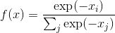
形状：
- 输入：任意shape
- 输出：和输入相同
参数：dim (int) – 这是将计算 Softmax 的维度 (所以每个沿着 dim 的切片和为 1).
返回值：返回结果是一个与输入维度相同的张量, 每个元素的取值范围在 [0, 1] 区间.
例:
>>> m = nn.Softmin()
>>> input = autograd.Variable(torch.randn(2, 3))
>>> print(input)
>>> print(m(input))
Softmax
class torch.nn.Softmax(dim=None)
对n维输入张量运用 Softmax 函数, 将张量的每个元素缩放到 (0,1) 区间且和为 1. Softmax 函数定义如下 
形状：
- 输入：任意shape
- 输出：和输入相同
返回值：返回结果是一个与输入维度相同的张量, 每个元素的取值范围在 [0, 1] 区间.
参数：dim (int) – 这是将计算 Softmax 的那个维度 (所以每个沿着 dim 的切片和为 1).
注解：
如果你想对原始 Softmax 数据计算 Log 进行收缩, 并不能使该模块直接使用 NLLLoss 负对数似然损失函数. 取而代之, 应该使用 Logsoftmax (它有更快的运算速度和更好的数值性质).
例:
>>> m = nn.Softmax()
>>> input = autograd.Variable(torch.randn(2, 3))
>>> print(input)
>>> print(m(input))
Softmax2d
class torch.nn.Softmax2d
把 SoftMax 应用于每个空间位置的特征.
给定图片的 通道数 Channels x 高 Height x 宽 Width, 它将对图片的每一个位置 使用 Softmax 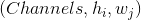
形状：
- 输入：
- 输出： (格式 shape 与输入相同)
返回值：一个维度及格式 shape 都和输入相同的 Tensor, 取值范围在[0, 1]
例:
>>> m = nn.Softmax2d()
>>> # you softmax over the 2nd dimension
>>> input = autograd.Variable(torch.randn(2, 3, 12, 13))
>>> print(input)
>>> print(m(input))
LogSoftmax
class torch.nn.LogSoftmax(dim=None)
对每个输入的 n 维 Tensor 使用 Log(Softmax(x)). LogSoftmax 公式可简化为
形状：
- 输入：任意格式 shape
- 输出：和输入的格式 shape 一致
参数：dim (int) – 这是将计算 Softmax 的那个维度 (所以每个沿着 dim 的切片和为1).
返回值：一个维度及格式 shape 都和输入相同的 Tensor, 取值范围在 [-inf, 0)
例:
>>> m = nn.LogSoftmax()
>>> input = autograd.Variable(torch.randn(2, 3))
>>> print(input)
>>> print(m(input))
Normalization layers (归一化层)
BatchNorm1d
class torch.nn.BatchNorm1d(num_features, eps=1e-05, momentum=0.1, affine=True)
对 2d 或者 3d 的小批量 (mini-batch) 数据进行批标准化 (Batch Normalization) 操作.
每个小批量数据中,计算各个维度的均值和标准差,并且 gamma 和 beta 是大小为 C 的可学习, 可改变的仿射参数向量( C 为输入大小).
在训练过程中,该层计算均值和方差,并进行平均移动,默认的平均移动动量值为 0.1.
在验证时,训练得到的均值/方差,用于标准化验证数据.
BatchNorm 在 'C' 维上处理,即 '(N,L)' 部分运行,被称作 'Temporal BatchNorm'
参数：
num_features– 预期输入的特征数,大小为 'batch_size x num_features [x width]'eps– 给分母加上的值,保证数值稳定(分母不能趋近0或取0),默认为 1e-5momentum– 动态均值和动态方差使用的移动动量值,默认为 0.1affine– 布尔值,设为 True 时,表示该层添加可学习,可改变的仿射参数,即 gamma 和 beta,默认为 True
形状：
- 输入：
 or
or - 输出： or (same shape as input)
示例：
>>> # With Learnable Parameters
>>> m = nn.BatchNorm1d(100)
>>> # Without Learnable Parameters
>>> m = nn.BatchNorm1d(100, affine=False)
>>> input = autograd.Variable(torch.randn(20, 100))
>>> output = m(input)
BatchNorm2d
class torch.nn.BatchNorm2d(num_features, eps=1e-05, momentum=0.1, affine=True)
对小批量 (mini-batch) 3d 数据组成的 4d 输入进行标准化 (Batch Normalization) 操作.
每个小批量数据中,计算各个维度的均值和标准差, 并且 gamma 和 beta 是大小为 C 的可学习,可改变的仿射参数向量 (C 为输入大小).
在训练过程中,该层计算均值和方差,并进行平均移动.默认的平均移动动量值为 0.1.
在验证时,训练得到的均值/方差,用于标准化验证数据.
BatchNorm 在 'C' 维上处理,即 '(N, H, W)' 部分运行,被称作 'Spatial BatchNorm'.
参数：
num_features– 预期输入的特征数,大小为 'batch_size x num_features x height x width'eps– 给分母加上的值,保证数值稳定(分母不能趋近0或取0),默认为 1e-5momentum– 动态均值和动态方差使用的移动动量值,默认为 0.1affine– 布尔值,设为 True 时,表示该层添加可学习,可改变的仿射参数,即 gamma 和 beta,默认为 True
形状：
- 输入：
- 输出： (same shape as input)
示例：
>>> # With Learnable Parameters
>>> m = nn.BatchNorm2d(100)
>>> # Without Learnable Parameters
>>> m = nn.BatchNorm2d(100, affine=False)
>>> input = autograd.Variable(torch.randn(20, 100, 35, 45))
>>> output = m(input)
BatchNorm3d
class torch.nn.BatchNorm3d(num_features, eps=1e-05, momentum=0.1, affine=True)
对小批量 (mini-batch) 4d 数据组成的 5d 输入进行标准化 (Batch Normalization) 操作.
每个小批量数据中,计算各个维度的均值和标准差, 并且 gamma 和 beta 是大小为 C 的可学习,可改变的仿射参数向量 (C 为输入大小).
在训练过程中,该层计算均值和方差,并进行平均移动.默认的平均移动动量值为 0.1.
在验证时,训练得到的均值/方差,用于标准化验证数据.
BatchNorm 在 'C' 维上处理,即 '(N, D, H, W)' 部分运行,被称作 'Volumetric BatchNorm' 或者 'Spatio-temporal BatchNorm'
参数：
num_features– 预期输入的特征数,大小为 'batch_size x num_features x depth x height x width'eps– 给分母加上的值,保证数值稳定(分母不能趋近0或取0),默认为 1e-5momentum– 动态均值和动态方差使用的移动动量值,默认为 0.1affine– 布尔值,设为 True 时,表示该层添加可学习,可改变的仿射参数,即 gamma 和 beta,默认为 True
形状：
- 输入：
- 输出： (same shape as input)
示例：
>>> # With Learnable Parameters
>>> m = nn.BatchNorm3d(100)
>>> # Without Learnable Parameters
>>> m = nn.BatchNorm3d(100, affine=False)
>>> input = autograd.Variable(torch.randn(20, 100, 35, 45, 10))
>>> output = m(input)
InstanceNorm1d
class torch.nn.InstanceNorm1d(num_features, eps=1e-05, momentum=0.1, affine=False)
对 2d 或者 3d 的小批量 (mini-batch) 数据进行实例标准化 (Instance Normalization) 操作. .. math:
y = \frac{x - mean[x]}{ \sqrt{Var[x]} + \epsilon} * gamma + beta
对小批量数据中的每一个对象,计算其各个维度的均值和标准差,并且 gamma 和 beta 是大小为 C 的可学习, 可改变的仿射参数向量( C 为输入大小).
在训练过程中,该层计算均值和方差,并进行平均移动,默认的平均移动动量值为 0.1.
在验证时 (.eval()),InstanceNorm 模型默认保持不变,即求得的均值/方差不用于标准化验证数据, 但可以用 .train(False) 方法强制使用存储的均值和方差.
参数：
num_features– 预期输入的特征数,大小为 'batch_size x num_features x width'eps– 给分母加上的值,保证数值稳定(分母不能趋近0或取0),默认为 1e-5momentum– 动态均值和动态方差使用的移动动量值,默认为 0.1affine– 布尔值,设为True时,表示该层添加可学习,可改变的仿射参数,即 gamma 和 beta,默认为False
形状：
- 输入：
- 输出： (same shape as input)
示例：
>>> # Without Learnable Parameters
>>> m = nn.InstanceNorm1d(100)
>>> # With Learnable Parameters
>>> m = nn.InstanceNorm1d(100, affine=True)
>>> input = autograd.Variable(torch.randn(20, 100, 40))
>>> output = m(input)
InstanceNorm2d
class torch.nn.InstanceNorm2d(num_features, eps=1e-05, momentum=0.1, affine=False)
对小批量 (mini-batch) 3d 数据组成的 4d 输入进行实例标准化 (Batch Normalization) 操作. .. math:
y = \frac{x - mean[x]}{ \sqrt{Var[x]} + \epsilon} * gamma + beta
对小批量数据中的每一个对象,计算其各个维度的均值和标准差,并且 gamma 和 beta 是大小为 C 的可学习, 可改变的仿射参数向量( C 为输入大小).
在训练过程中,该层计算均值和方差,并进行平均移动,默认的平均移动动量值为 0.1.
在验证时 (.eval()),InstanceNorm 模型默认保持不变,即求得的均值/方差不用于标准化验证数据, 但可以用 .train(False) 方法强制使用存储的均值和方差.
参数：
num_features– 预期输入的特征数,大小为 'batch_size x num_features x height x width'eps– 给分母加上的值,保证数值稳定(分母不能趋近0或取0),默认为 1e-5momentum– 动态均值和动态方差使用的移动动量值,默认为 0.1affine– 布尔值,设为True时,表示该层添加可学习,可改变的仿射参数,即 gamma 和 beta,默认为False
形状：
- 输入：
- 输出： (same shape as input)
示例：
>>> # Without Learnable Parameters
>>> m = nn.InstanceNorm2d(100)
>>> # With Learnable Parameters
>>> m = nn.InstanceNorm2d(100, affine=True)
>>> input = autograd.Variable(torch.randn(20, 100, 35, 45))
>>> output = m(input)
InstanceNorm3d
class torch.nn.InstanceNorm3d(num_features, eps=1e-05, momentum=0.1, affine=False)
对小批量 (mini-batch) 4d 数据组成的 5d 输入进行实例标准化 (Batch Normalization) 操作. .. math:
y = \frac{x - mean[x]}{ \sqrt{Var[x]} + \epsilon} * gamma + beta
对小批量数据中的每一个对象,计算其各个维度的均值和标准差,并且 gamma 和 beta 是大小为 C 的可学习, 可改变的仿射参数向量( C 为输入大小).
在训练过程中,该层计算均值和方差,并进行平均移动,默认的平均移动动量值为 0.1.
在验证时 (.eval()),InstanceNorm 模型默认保持不变,即求得的均值/方差不用于标准化验证数据, 但可以用 .train(False) 方法强制使用存储的均值和方差.
参数：
num_features– 预期输入的特征数,大小为 'batch_size x num_features x depth x height x width'eps– 给分母加上的值,保证数值稳定(分母不能趋近0或取0),默认为 1e-5momentum– 动态均值和动态方差使用的移动动量值,默认为 0.1affine– 布尔值,设为True时,表示该层添加可学习,可改变的仿射参数,即 gamma 和 beta,默认为False
形状：
- 输入：
- 输出： (same shape as input)
示例：
>>> # Without Learnable Parameters
>>> m = nn.InstanceNorm3d(100)
>>> # With Learnable Parameters
>>> m = nn.InstanceNorm3d(100, affine=True)
>>> input = autograd.Variable(torch.randn(20, 100, 35, 45, 10))
>>> output = m(input)
Recurrent layers (循环层)
RNN
class torch.nn.RNN(*args, **kwargs)
对于输入序列使用一个多层的 Elman RNN, 它的激活函数为 tanh 或者 ReLU .
对输入序列中每个元素, 每层计算公式为:

这里 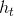 是当前在时刻 t 的隐状态, 并且  是之前一层在
是之前一层在 t 时刻的隐状态, 或者是第一层的输入. 如果 nonlinearity='relu' ,那么将使用 relu 代替 tanh 作为激活函数.
参数：
input_size– 输入 x 的特征数量hidden_size– 隐状态h中的特征数量num_layers– RNN 的层数nonlinearity– 指定非线性函数使用 ['tanh'|'relu']. 默认: 'tanh'bias– 如果是False, 那么 RNN 层就不会使用偏置权重 b_ih 和 b_hh, 默认:Truebatch_first– 如果True, 那么输入Tensor的 shape 应该是 (batch, seq, feature),并且输出也是一样dropout– 如果值非零, 那么除了最后一层外, 其它层的输出都会套上一个dropout层bidirectional– 如果True, 将会变成一个双向 RNN, 默认为False
Inputs: input, h_0
input (seq_len, batch, input_size): 包含输入序列特征的tensor,input可以是被填充的变长序列.细节请看torch.nn.utils.rnn.pack_padded_sequence().h_0 (num_layers * num_directions, batch, hidden_size): 包含batch中每个元素保存着初始隐状态的tensor
Outputs: output, h_n
output (seq_len, batch, hidden_size * num_directions): 包含 RNN 最后一层输出特征 (h_k) 的tensor对于每个 k ,如果输入是一个torch.nn.utils.rnn.PackedSequence, 那么输出也是一个可以是被填充的变长序列.h_n (num_layers * num_directions, batch, hidden_size): 包含 k= seq_len 隐状态的tensor.
变量：
- weight_ih_l[k] – 第 k 层的 input-hidden 权重,可学习, shape 是
(input_size x hidden_size) - weight_hh_l[k] – 第 k 层的 hidden-hidden 权重, 可学习, shape 是
(hidden_size x hidden_size) - bias_ih_l[k] – 第 k 层的 input-hidden 偏置, 可学习, shape 是
(hidden_size) - bias_hh_l[k] – 第 k 层的 hidden-hidden 偏置, 可学习, shape 是
(hidden_size)
Examples:
>>> rnn = nn.RNN(10, 20, 2)
>>> input = Variable(torch.randn(5, 3, 10))
>>> h0 = Variable(torch.randn(2, 3, 20))
>>> output, hn = rnn(input, h0)
LSTM
class torch.nn.LSTM(*args, **kwargs)
对于输入序列使用一个多层的 LSTM ( long short-term memory ).
对输入序列的每个元素, LSTM 的每层都会执行以下计算:

这里 是在时刻 t 的隐状态,  是在时刻
是在时刻 t 的细胞状态 (cell state), 是上一层的在时刻 t 的隐状态或者是第一层的 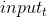 , 而 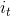,  ,
,  , 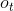 分别代表 输入门,遗忘门,细胞和输出门.
, 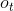 分别代表 输入门,遗忘门,细胞和输出门.
参数：
input_size– 输入的特征维度hidden_size– 隐状态的特征维度num_layers– 层数(和时序展开要区分开)bias– 如果为False,那么 LSTM 将不会使用 b_ih 和 b_hh ,默认:Truebatch_first– 如果为True, 那么输入和输出 Tensor 的形状为 (batch, seq, feature)dropout– 如果非零的话, 将会在 RNN 的输出上加个 dropout , 最后一层除外bidirectional– 如果为True,将会变成一个双向 RNN ,默认为False
Inputs: input, (h_0, c_0)
input (seq_len, batch, input_size): 包含输入序列特征的tensor. 也可以是packed variable length sequence, 详见torch.nn.utils.rnn.pack_padded_sequence().h_0 (num_layers * num_directions, batch, hidden_size): 包含 batch 中每个元素的初始化隐状态的tensor.c_0 (num_layers * num_directions, batch, hidden_size): 包含 batch 中每个元素的初始化细胞状态的tensor.
Outputs: output, (h_n, c_n)
output (seq_len, batch, hidden_size * num_directions): 包含 RNN 最后一层的输出特征(h_t)的tensor, 对于每个 t . 如果输入是torch.nn.utils.rnn.PackedSequence那么输出也是一个可以是被填充的变长序列.h_n (num_layers * num_directions, batch, hidden_size): 包含 t=seq_len 隐状态的tensor.c_n (num_layers * num_directions, batch, hidden_size): 包含 t=seq_len 细胞状态的tensor.
变量：
- weight_ih_l[k] – 第 k 层可学习的 input-hidden 权重
(W_ii|W_if|W_ig|W_io), shape 是(4*hidden_size x input_size) - weight_hh_l[k] – 第 k 层可学习的 hidden-hidden 权重
(W_hi|W_hf|W_hg|W_ho), shape 是(4*hidden_size x hidden_size) - bias_ih_l[k] – 第 k 层可学习的 input-hidden 偏置
(b_ii|b_if|b_ig|b_io), shape 是(4*hidden_size) - bias_hh_l[k] – 第 k 层可学习的 hidden-hidden 偏置
(b_hi|b_hf|b_hg|b_ho), shape 是(4*hidden_size)
Examples:
>>> rnn = nn.LSTM(10, 20, 2)
>>> input = Variable(torch.randn(5, 3, 10))
>>> h0 = Variable(torch.randn(2, 3, 20))
>>> c0 = Variable(torch.randn(2, 3, 20))
>>> output, hn = rnn(input, (h0, c0))
GRU
class torch.nn.GRU(*args, **kwargs)
对于输入序列使用一个多层的 GRU (gated recurrent unit).
对输入序列的每个元素, 每层都会执行以下计算:

这里 是在时刻 t 的隐状态, 是前一层在时刻 t 的隐状态或者是第一层的 , 而  , 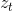,
, 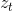,  分别是重置门,输入门和新门.
分别是重置门,输入门和新门.
参数：
input_size– 输入的特征维度hidden_size– 隐状态的特征维度num_layers– RNN 的层数bias– 如果为False, 那么 RNN 层将不会使用偏置权重 b_ih 和 b_hh 默认:Truebatch_first– 如果为True, 那么输入和输出的tensor的形状是 (batch, seq, feature)dropout– 如果非零的话,将会在 RNN 的输出上加个 dropout ,最后一层除外bidirectional– 如果为True, 将会变成一个双向 RNN . 默认:False
Inputs: input, h_0
input (seq_len, batch, input_size): 包含输入序列特征的tensor. 也可以是packed variable length sequence, 详见torch.nn.utils.rnn.pack_padded_sequence().h_0 (num_layers * num_directions, batch, hidden_size): 包含 batch 中每个元素的初始化隐状态的tensor
Outputs: output, h_n
output (seq_len, batch, hidden_size * num_directions): 包含 RNN 最后一层的输出特征(h_t)的tensor, 对于每个 t . 如果输入是torch.nn.utils.rnn.PackedSequence那么输出也是一个可以是被填充的变长序列.h_n (num_layers * num_directions, batch, hidden_size): 包含 t=seq_len 隐状态的tensor.
变量：
- weight_ih_l[k] – 第 k 层可学习的 input-hidden 权重 (W_ir|W_iz|W_in), shape 为
(3*hidden_size x input_size) - weight_hh_l[k] – 第 k 层可学习的 hidden-hidden 权重 (W_hr|W_hz|W_hn), shape 为
(3*hidden_size x hidden_size) - bias_ih_l[k] – 第 k 层可学习的 input-hidden 偏置 (b_ir|b_iz|b_in), shape 为
(3*hidden_size) - bias_hh_l[k] – 第 k 层可学习的 hidden-hidden 偏置 (b_hr|b_hz|b_hn), shape 为
(3*hidden_size)
Examples:
>>> rnn = nn.GRU(10, 20, 2)
>>> input = Variable(torch.randn(5, 3, 10))
>>> h0 = Variable(torch.randn(2, 3, 20))
>>> output, hn = rnn(input, h0)
RNNCell
class torch.nn.RNNCell(input_size, hidden_size, bias=True, nonlinearity='tanh')
一个 Elan RNN cell , 激活函数是 tanh 或 ReLU , 用于输入序列.

如果 nonlinearity='relu', 那么将会使用 ReLU 来代替 tanh .
参数：
input_size– 输入的特征维度hidden_size– 隐状态的特征维度bias– 如果为False, 那么RNN层将不会使用偏置权重 b_ih 和 b_hh. 默认:Truenonlinearity– 用于选择非线性激活函数 ['tanh'|'relu']. 默认: 'tanh'
Inputs: input, hidden
input (batch, input_size): 包含输入特征的tensor.hidden (batch, hidden_size): 包含 batch 中每个元素的初始化隐状态的tensor.
Outputs: h'
- h' (batch, hidden_size): 保存着 batch 中每个元素的下一层隐状态的
tensor.
变量：
weight_ih–input-hidden权重, 可学习, shape 为(input_size x hidden_size)weight_hh–hidden-hidden权重, 可学习, shape 为(hidden_size x hidden_size)bias_ih–input-hidden偏置,可学习, shape 为(hidden_size)bias_hh–hidden-hidden偏置,可学习, shape 为(hidden_size)
Examples:
>>> rnn = nn.RNNCell(10, 20)
>>> input = Variable(torch.randn(6, 3, 10))
>>> hx = Variable(torch.randn(3, 20))
>>> output = []
>>> for i in range(6):
... hx = rnn(input[i], hx)
... output.append(hx)
LSTMCell
class torch.nn.LSTMCell(input_size, hidden_size, bias=True)
LSTM 细胞.

参数：
input_size– 输入的特征维度hidden_size– 隐状态的维度bias– 如果为False, 那么RNN层将不会使用偏置权重 b_ih 和 b_hh 默认:True
Inputs: input, (h_0, c_0)
input (batch, input_size): 包含输入特征的tensor.h_0 (batch, hidden_size): 包含 batch 中每个元素的初始化隐状态的tensor.c_0 (batch. hidden_size): 包含 batch 中每个元素的初始化细胞状态的tensor
Outputs: h_1, c_1
h_1 (batch, hidden_size): 保存着 batch 中每个元素的下一层隐状态的tensorc_1 (batch, hidden_size): 保存着 batch 中每个元素的下一细胞状态的tensor
变量：
weight_ih–input-hidden权重, 可学习, 形状为(4*hidden_size x input_size)weight_hh–hidden-hidden权重, 可学习, 形状为(4*hidden_size x hidden_size)bias_ih–input-hidden偏置, 可学习, 形状为(4*hidden_size)bias_hh–hidden-hidden偏置, 可学习, 形状为(4*hidden_size)
Examples:
>>> rnn = nn.LSTMCell(10, 20)
>>> input = Variable(torch.randn(6, 3, 10))
>>> hx = Variable(torch.randn(3, 20))
>>> cx = Variable(torch.randn(3, 20))
>>> output = []
>>> for i in range(6):
... hx, cx = rnn(input[i], (hx, cx))
... output.append(hx)
GRUCell
class torch.nn.GRUCell(input_size, hidden_size, bias=True)
GRU 细胞

参数：
input_size– 输入的特征维度hidden_size– 隐状态的维度bias– 如果为False, 那么RNN层将不会使用偏置权重 b_ih 和 b_hh 默认:True
Inputs: input, hidden
input (batch, input_size): 包含输入特征的tensor.hidden (batch, hidden_size): 包含 batch 中每个元素的初始化隐状态的tensor.
Outputs: h'
- h': (batch, hidden_size): 保存着 batch 中每个元素的下一层隐状态的
tensor
变量：
weight_ih–input-hidden权重, 可学习, shape 为,(3*hidden_size x input_size)weight_hh–hidden-hidden权重, 可学习, shape 为(3*hidden_size x hidden_size)bias_ih–input-hidden偏置, 可学习, shape 为(3*hidden_size)bias_hh–hidden-hidden偏置, 可学习, shape 为(3*hidden_size)
Examples:
>>> rnn = nn.GRUCell(10, 20)
>>> input = Variable(torch.randn(6, 3, 10))
>>> hx = Variable(torch.randn(3, 20))
>>> output = []
>>> for i in range(6):
... hx = rnn(input[i], hx)
... output.append(hx)
Linear layers (线性层)
Linear
class torch.nn.Linear(in_features, out_features, bias=True)
对输入数据进行线性变换: 
参数：
in_features– 每个输入样本的大小out_features– 每个输出样本的大小bias– 若设置为 False, 这层不会学习偏置. 默认值: True
形状：
- 输入：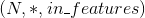 这里
*意味着可以添加任意数量的其他维度 - 输出： 除了最后一个维度外, 其余的都与输入相同
变量：
weight– 形状为 (out_features x in_features) 的模块中可学习的权值bias– 形状为 (out_features) 的模块中可学习的偏置
Examples:
>>> m = nn.Linear(20, 30)
>>> input = autograd.Variable(torch.randn(128, 20))
>>> output = m(input)
>>> print(output.size())
Bilinear
class torch.nn.Bilinear(in1_features, in2_features, out_features, bias=True)
对输入数据进行双线性变换: 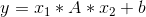
参数：
in1_features– 输入一的每个输入样本的大小in2_features– 输入二的每个输入样本的大小out_features– 每个输出样本的大小bias– 若设置为False, 这层不会学习偏置. 默认值: True
形状：
- 输入：,
- 输出：

变量：
weight– 形状为 (out_features x in1_features x in2_features) 的模块中可学习的权值bias– 形状为 (out_features) 的模块中可学习的偏置
Examples:
>>> m = nn.Bilinear(20, 30, 40)
>>> input1 = autograd.Variable(torch.randn(128, 20))
>>> input2 = autograd.Variable(torch.randn(128, 30))
>>> output = m(input1, input2)
>>> print(output.size())
Dropout layers
Dropout
class torch.nn.Dropout(p=0.5, inplace=False)
Dropout 在训练期间, 按照伯努利概率分布, 以概率 p 随机地将输入张量中的部分元素
置为 0, 在每次调用时, 被置为 0 的元素是随机的.
Dropout 已被证明是正则化的一个行之有效的技术, 并且在防止神经元之间互适应问题上 也卓有成效.(神经元互适应问题详见论文 Improving neural networks by preventing co-adaptation of feature detectors)
并且, Dropout 的输出均与 1/(1-p) 的比例系数进行了相乘, 保证了求值时函数是归一化的.
Args: p: 元素被置为0的概率, 默认值: 0.5 inplace: 如果为 True, 置0操作将直接发生在传入的元素上.默认值: false Shape:
- 输入：any.输入数据可以是任何大小
- 输出：Same.输出数据大小与输入相同
Examples:
>>> m = nn.Dropout(p=0.2)
>>> input = autograd.Variable(torch.randn(20, 16))
>>> output = m(input)
Dropout2d
class torch.nn.Dropout2d(p=0.5, inplace=False)
Dropout2d 将输入张量的所有通道随机地置为 0.被置为 0 的通道在每次调用时是随机的.
通常输入数据来自 Conv2d 模块.
在论文 Efficient Object Localization Using Convolutional Networks 中有如下 描述: 如果特征映射中的邻接像素是强相关的(在早期的卷积层中很常见）, 那么独立同分布 的 dropout 将不会正则化激活函数, 相反其会导致有效的学习率的下降.
在这样的情况下, 应该使用函数函数 nn.Dropout2d , 它能够提升特征映射之间的独立性.
Args: p (float,optional): 元素被置0的概率 inplace(bool, 可选）: 如果被设为'True', 置0操作将直接作用在输入元素上 Shape:
- 输入：math:(N, C, H, W)
- 输出：math:(N, C, H, W) (与输入相同）
Examples:
```py >>> m = nn.Dropout2d(p=0.2)
```
```py >>> input = autograd.Variable(torch.randn(20, 16, 32, 32)) >>> output = m(input)
```
Dropout3d
class torch.nn.Dropout3d(p=0.5, inplace=False)
Dropout3d 将输入张量的所有通道随机地置为 0.被置为 0 的通道在每次调用时是随机的.
通常输入数据来自 Conv3d 模块.
在论文 Efficient Object Localization Using Convolutional Networks 中有如下 描述: 如果特征映射中的邻接像素是强相关的(在早期的卷积层中很常见）, 那么独立同分布 的 dropout 将不会正则化激活函数, 相反其会导致有效的学习率的下降.
在这样的情况下, 应该使用函数函数 nn.Dropout3d , 它能够促进特征映射之间的独立性.
Args: p (float,optional): 元素被置0的概率 inplace(bool, 可选）: 如果被设为 True , 置0操作将直接作用在输入元素上 Shape:
- 输入：math:(N, C, H, W)
- 输出：math:(N, C, H, W) (与输入相同）
Examples:
```py >>> m = nn.Dropout3d(p=0.2)
```
```py >>> input = autograd.Variable(torch.randn(20, 16, 4, 32, 32)) >>> output = m(input)
```
AlphaDropout
class torch.nn.AlphaDropout(p=0.5)
在输入上应用 Alpha Dropout.
Alpha Dropout 是一种维持自正交性质的 Dropout . 对于一个均值为 0 和标准差为 1 的输入 来说, Alpha Dropout 能保持原始数据的均值和标准差.Alpha Dropout 和 SELU 激活函数 携手同行, 后者也保证了输出拥有与输入相同的均值和标准差.
Alpha Dropout 在训练期间, 按照伯努利概率分布, 以概率 p 随机地将输入张量中的部分元素 置进行掩盖, 在每次调用中, 被掩盖的元素是随机的, 并且对输出会进行缩放、变换等操作 以保持均值为 0、标准差为 1.
在求值期间, 模块简单的计算一个归一化的函数.
更多信息请参考论文: Self-Normalizing Neural Networks
Args: p(float）: 元素被掩盖的概率, 默认值: 0.5 Shape:
- 输入：any.输入数据可以是任何大小
- 输出：Same.输出数据大小与输入相同
Examples:
```py >>> m = nn.AlphaDropout(p=0.2)
```
```py >>> input = autograd.Variable(torch.randn(20, 16)) >>> output = m(input)
```
Sparse layers (稀疏层)
Embedding
class torch.nn.Embedding(num_embeddings, embedding_dim, padding_idx=None, max_norm=None, norm_type=2, scale_grad_by_freq=False, sparse=False)
一个简单的查找表, 存储了固定字典和大小的 embedding.
这个模块经常用来存储 word embeddings, 并通过索引来检索, 模块的输入是索引构成的列表, 输出是对应的 word embeddings.
参数：
num_embeddings (int)– embeddings 字典的大小embedding_dim (int)– 每个 embedding 向量的大小padding_idx (int, 可选)– 如果给出, 在索引处, 输出补零max_norm (float, 可选)– 如果给出, 重新归一化 embeddings, 使其范数小于该值norm_type (float, 可选)– 为 max_norm 选项计算 p 范数时 Pscale_grad_by_freq (boolean, 可选)– 如果给出, 会根据 words 在 mini-batch 中的频率缩放梯度sparse (boolean, 可选)– 如果为True, 关于权重矩阵的梯度是一个稀疏张量, 详情请参考稀疏梯度
| Variables: | weight (Tensor) – shape 为 (num_embeddings, embedding_dim) 的模块的可学习权重 |
|---|---|
形状：
- 输入：LongTensor
(N, W), N = mini-batch, W = 每个 mini-batch 中用来提取的索引数 - 输出：
(N, W, embedding_dim)
注解：
请注意, 只支持有限数量的优化器. 稀疏梯度: 当前是 (cuda 和 cpu) 版本的 optim.SGD, 和 (cpu) 版本的 optim.Adagrad.
Examples:
>>> # an Embedding module containing 10 tensors of size 3
>>> embedding = nn.Embedding(10, 3)
>>> # a batch of 2 samples of 4 indices each
>>> input = Variable(torch.LongTensor([[1,2,4,5],[4,3,2,9]]))
>>> embedding(input)
Variable containing:
(0 ,.,.) =
-1.0822 1.2522 0.2434
0.8393 -0.6062 -0.3348
0.6597 0.0350 0.0837
0.5521 0.9447 0.0498
(1 ,.,.) =
0.6597 0.0350 0.0837
-0.1527 0.0877 0.4260
0.8393 -0.6062 -0.3348
-0.8738 -0.9054 0.4281
[torch.FloatTensor of size 2x4x3]
>>> # example with padding_idx
>>> embedding = nn.Embedding(10, 3, padding_idx=0)
>>> input = Variable(torch.LongTensor([[0,2,0,5]]))
>>> embedding(input)
Variable containing:
(0 ,.,.) =
0.0000 0.0000 0.0000
0.3452 0.4937 -0.9361
0.0000 0.0000 0.0000
0.0706 -2.1962 -0.6276
[torch.FloatTensor of size 1x4x3]
EmbeddingBag
class torch.nn.EmbeddingBag(num_embeddings, embedding_dim, max_norm=None, norm_type=2, scale_grad_by_freq=False, mode='mean')
计算一 个'bags' 里的 embedding s的均值或和, 不用实例化中间的 embeddings
对于固定长度的 bags
- nn.EmbeddingBag 和
mode=sum相当于 nn.Embedding 与之后的torch.sum(dim=1) - 其与
mode=mean相当于 nn.Embedding 与之后的torch.mean(dim=1)
然而, 比起一连串这样的操作, nn.EmbeddingBag 在时间和内存上更加高效.
参数：
num_embeddings (int)– embeddings 字典的大小embedding_dim (int)– 每个 embedding 向量的大小max_norm (float, 可选)– 如果给出, 重新归一化 embeddings, 使其范数小于该值norm_type (float, 可选)– 为 max_norm 选项计算 p 范数时的 Pscale_grad_by_freq (boolean, 可选)– 如果给出, 会根据 words 在 mini-batch 中的频率缩放梯度mode (string, 可选)– 'sum' | 'mean'. 指定减少 bag 的方式. 默认: 'mean'
| Variables: | weight (Tensor) – shape 为 (num_embeddings, embedding_dim) 的模块的可学习权重 |
|---|---|
Inputs: input, offsets
input (N or BxN): LongTensor, 包括要提取的 embeddings 的索引, 当input是形状为N的 1D 张量时, 一个给出的offsets张量中包括: mini-batch 中每个新序列的起始位置offsets (B or None): LongTensor, 包括一个 mini-batch 的可变长度序列中的每个新样本的起始位置 如果input是 2D (BxN) 的, offset 就不用再给出; 如果input是一个 mini-batch 的固定长度的序列, 每个序列的长度为N
形状：
- 输入：LongTensor
N, N = 要提取的 embeddings 的数量,
或者是 LongTensor
BxN, B = mini-batch 中序列的数量, N = 每个序列中 embeddings 的数量
- Offsets: LongTensor
B, B = bags 的数量, 值为每个 bag 中input的 offset, i.e. 是长度的累加. Offsets 不会给出, 如果 Input是 2D 的BxN张量, 输入被认为是固定长度的序列 - 输出：
(B, embedding_dim)
Examples:
>>> # an Embedding module containing 10 tensors of size 3
>>> embedding_sum = nn.EmbeddingBag(10, 3, mode='sum')
>>> # a batch of 2 samples of 4 indices each
>>> input = Variable(torch.LongTensor([1,2,4,5,4,3,2,9]))
>>> offsets = Variable(torch.LongTensor([0,4]))
>>> embedding_sum(input, offsets)
Variable containing:
-0.7296 -4.6926 0.3295
-0.5186 -0.5631 -0.2792
[torch.FloatTensor of size 2x3]
Distance functions (距离函数)
CosineSimilarity
class torch.nn.CosineSimilarity(dim=1, eps=1e-08)
返回沿着 dim 方向计算的 x1 与 x2 之间的余弦相似度.

参数：
dim (int, 可选)– 计算余弦相似度的维度. Default: 1eps (float, 可选)– 小的值以避免被零除. Default: 1e-8
形状：
- Input1:
 , 其中的 D 表示
, 其中的 D 表示 dim的位置 - Input2: , 与 Input1 一样的 shape
- 输出：

Examples:
>>> input1 = autograd.Variable(torch.randn(100, 128))
>>> input2 = autograd.Variable(torch.randn(100, 128))
>>> cos = nn.CosineSimilarity(dim=1, eps=1e-6)
>>> output = cos(input1, input2)
>>> print(output)
PairwiseDistance
class torch.nn.PairwiseDistance(p=2, eps=1e-06)
计算向量 v1, v2 之间的 batchwise pairwise distance(分批成对距离):

参数：
p (_real_)– norm degree(规范程度). Default: 2eps (float, 可选)– 小的值以避免被零除. Default: 1e-6
形状：
- Input1: , 其中的
D = vector dimension(向量维度) - Input2: , 与 Input1 的 shape 一样
- 输出：

Examples:
>>> pdist = nn.PairwiseDistance(p=2)
>>> input1 = autograd.Variable(torch.randn(100, 128))
>>> input2 = autograd.Variable(torch.randn(100, 128))
>>> output = pdist(input1, input2)
Loss functions (损失函数)
L1Loss
class torch.nn.L1Loss(size_average=True, reduce=True)
创建一个衡量输入 x 与目标 y 之间差的绝对值的平均值的标准, 该 函数会逐元素地求出 x 和 y 之间差的绝对值, 最后返回绝对值的平均值.
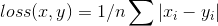
x 和 y 可以是任意维度的数组, 但需要有相同数量的n个元素.
求和操作会对n个元素求和, 最后除以 n .
在构造函数的参数中传入 size_average=False, 最后求出来的绝对值将不会除以 n.
参数：
size_average (bool, 可选)– 默认情况下, loss 会在每个 mini-batch(小批量） 上取平均值. 如果字段 size_average 被设置为False, loss 将会在每个 mini-batch(小批量） 上累加, 而不会取平均值. 当 reduce 的值为False时该字段会被忽略. 默认值:Truereduce (bool, 可选)– 默认情况下, loss 会在每个 mini-batch(小批量）上求平均值或者 求和. 当 reduce 是False时, 损失函数会对每个 batch 元素都返回一个 loss 并忽 略 size_average 字段. 默认值:True
形状：
- 输入: ,
*表示任意数量的额外维度 - 目标: , 和输入的shape相同
- 输出: 标量. 如果 reduce 是
False, 则输出为, shape与输出相同
Examples:
>>> loss = nn.L1Loss()
>>> input = autograd.Variable(torch.randn(3, 5), requires_grad=True)
>>> target = autograd.Variable(torch.randn(3, 5))
>>> output = loss(input, target)
>>> output.backward()
MSELoss
class torch.nn.MSELoss(size_average=True, reduce=True)
输入 x 和 目标 y 之间的均方差
x 和 y 可以是任意维度的数组, 但需要有相同数量的n个元素.
求和操作会对n个元素求和, 最后除以 n.
在构造函数的参数中传入 size_average=False , 最后求出来的绝对值将不会除以 n.
要得到每个 batch 中每个元素的 loss, 设置 reduce 为 False. 返回的 loss 将不会 取平均值, 也不会被 size_average 影响.
参数：
size_average (bool, 可选)– 默认情况下, loss 会在每个 mini-batch(小批量） 上取平均值. 如果字段 size_average 被设置为False, loss 会在每 个 mini-batch(小批量）上求和. 只有当 reduce 的值为True才会生效. 默认值:Truereduce (bool, 可选)– 默认情况下, loss 会根据 size_average 的值在每 个 mini-batch(小批量）上求平均值或者求和. 当 reduce 是False时, 损失函数会对每 个 batch 元素都返回一个 loss 并忽略 size_average字段. 默认值:True
形状：
- 输入: , 其中
*表示任意数量的额外维度. - 目标: , shape 跟输入相同
Examples:
>>> loss = nn.MSELoss()
>>> input = autograd.Variable(torch.randn(3, 5), requires_grad=True)
>>> target = autograd.Variable(torch.randn(3, 5))
>>> output = loss(input, target)
>>> output.backward()
CrossEntropyLoss
class torch.nn.CrossEntropyLoss(weight=None, size_average=True, ignore_index=-100, reduce=True)
该类把 LogSoftMax 和 NLLLoss 结合到了一个类中
当训练有 C 个类别的分类问题时很有效. 可选参数 weight 必须是一个1维 Tensor, 权重将被分配给各个类别. 对于不平衡的训练集非常有效.
input 含有每个类别的分数
input 必须是一个2维的形如 (minibatch, C) 的 Tensor.
target 是一个类别索引 (0 to C-1), 对应于 minibatch 中的每个元素
loss 可以描述为:
loss(x, class) = -log(exp(x[class]) / (\sum_j exp(x[j])))
= -x[class] + log(\sum_j exp(x[j]))
当 weight 参数存在时:
loss(x, class) = weight[class] * (-x[class] + log(\sum_j exp(x[j])))
loss 在每个 mini-batch(小批量）上取平均值.
参数：
weight (Tensor, 可选)– 自定义的每个类别的权重. 必须是一个长度为C的 Tensorsize_average (bool, 可选)– 默认情况下, loss 会在每个 mini-batch(小批量） 上取平均值. 如果字段 size_average 被设置为False, loss 将会在每个 mini-batch(小批量） 上累加, 而不会取平均值. 当 reduce 的值为False时该字段会被忽略.ignore_index (int, 可选)– 设置一个目标值, 该目标值会被忽略, 从而不会影响到 输入的梯度. 当 size_average 字段为True时, loss 将会在没有被忽略的元素上 取平均.reduce (bool, 可选)– 默认情况下, loss 会根据 size_average 的值在每 个 mini-batch(小批量）上求平均值或者求和. 当 reduce 是False时, 损失函数会对 每个 batch 元素都返回一个 loss 并忽略 size_average 字段. 默认值:True
形状：
- 输入: , 其中
C是类别的数量 - 目标:
 , 其中的每个元素都满足
, 其中的每个元素都满足 0 <= targets[i] <= C-1 - 输出: 标量. 如果 reduce 是
False, 则输出为.
Examples:
>>> loss = nn.CrossEntropyLoss()
>>> input = autograd.Variable(torch.randn(3, 5), requires_grad=True)
>>> target = autograd.Variable(torch.LongTensor(3).random_(5))
>>> output = loss(input, target)
>>> output.backward()
NLLLoss
class torch.nn.NLLLoss(weight=None, size_average=True, ignore_index=-100, reduce=True)
负对数似然损失. 用于训练 C 个类别的分类问题. 可选参数 weight 是 一个1维的 Tensor, 用来设置每个类别的权重. 当训练集不平衡时该参数十分有用.
由前向传播得到的输入应该含有每个类别的对数概率: 输入必须是形如 (minibatch, C) 的 2维 Tensor.
在一个神经网络的最后一层添加 LogSoftmax 层可以得到对数概率. 如果你不希望在神经网络中 加入额外的一层, 也可以使用 CrossEntropyLoss 函数.
该损失函数需要的目标值是一个类别索引 (0 到 C-1, 其中 C 是类别数量)
该 loss 可以描述为:
loss(x, class) = -x[class]
或者当 weight 参数存在时可以描述为:
loss(x, class) = -weight[class] * x[class]
又或者当 ignore_index 参数存在时可以描述为:
loss(x, class) = class != ignoreIndex ? -weight[class] * x[class] : 0
参数：
weight (Tensor, 可选)– 自定义的每个类别的权重. 必须是一个长度为C的 Tensorsize_average (bool, 可选)– 默认情况下, loss 会在每个 mini-batch(小批量） 上取平均值. 如果字段 size_average 被设置为False, loss 将会在每个 mini-batch(小批量） 上累加, 而不会取平均值. 当 reduce 的值为False时该字段会被忽略. 默认值:Trueignore_index (int, 可选)– 设置一个目标值, 该目标值会被忽略, 从而不会影响到 输入的梯度. 当 size_average 为True时, loss 将会在没有被忽略的元素上 取平均值.reduce (bool, 可选)– 默认情况下, loss 会在每个 mini-batch(小批量）上求平均值或者 求和. 当 reduce 是False时, 损失函数会对每个 batch 元素都返回一个 loss 并忽 略 size_average 字段. 默认值:True
形状：
- 输入: , 其中
C是类别的数量 - 目标: , 其中的每个元素都满足
0 <= targets[i] <= C-1 - 输出: 标量. 如果 reduce 是
False, 则输出为.
Examples:
>>> m = nn.LogSoftmax()
>>> loss = nn.NLLLoss()
>>> # input is of size N x C = 3 x 5
>>> input = autograd.Variable(torch.randn(3, 5), requires_grad=True)
>>> # each element in target has to have 0 <= value < C
>>> target = autograd.Variable(torch.LongTensor([1, 0, 4]))
>>> output = loss(m(input), target)
>>> output.backward()
PoissonNLLLoss
class torch.nn.PoissonNLLLoss(log_input=True, full=False, size_average=True, eps=1e-08)
目标值为泊松分布的负对数似然损失.
该损失可以描述为:
target ~ Pois(input) loss(input, target) = input - target * log(input) + log(target!)
最后一项可以被省略或者用 Stirling 公式来近似. 该近似用于大于1的目标值. 当目标值 小于或等于1时, 则将0加到 loss 中.
参数：
log_input (bool, 可选)– 如果设置为True, loss 将会按照公 式exp(input) - target * input来计算, 如果设置为False, loss 将会按照input - target * log(input+eps)计算.full (bool, 可选)– 是否计算全部的 loss, i. e. 加上 Stirling 近似项target * log(target) - target + 0.5 * log(2 * pi * target).size_average (bool, 可选)– 默认情况下, loss 会在每个 mini-batch(小批量） 上取平均值. 如果字段 size_average 被设置为False, loss 将会在每个 mini-batch(小批量） 上累加, 而不会取平均值.eps (float, 可选)– 当 log_input==False时, 取一个很小的值用来避免计算 log(0). 默认值: 1e-8
Examples:
>>> loss = nn.PoissonNLLLoss()
>>> log_input = autograd.Variable(torch.randn(5, 2), requires_grad=True)
>>> target = autograd.Variable(torch.randn(5, 2))
>>> output = loss(log_input, target)
>>> output.backward()
NLLLoss2d
class torch.nn.NLLLoss2d(weight=None, size_average=True, ignore_index=-100, reduce=True)
对于图片输入的负对数似然损失. 它计算每个像素的负对数似然损失.
参数：
weight (Tensor, 可选)– 自定义的每个类别的权重. 必须是一个长度为C的 Tensorsize_average– 默认情况下, loss 会在每个 mini-batch(小批量） 上取平均值. 如果字段 size_average 被设置为False, loss 将会在每个 mini-batch(小批量） 上累加, 而不会取平均值. 当 reduce 的值为False时该字段会被忽略. 默认值:Truereduce (bool, 可选)– 默认情况下, loss 会在每个 mini-batch(小批量）上求平均值或者 求和. 当 reduce 是False时, 损失函数会对每个 batch 元素都返回一个 loss 并忽 略 size_average 字段. 默认值:True
形状：
- 输入： where
C = number of classes - Target:
 where each value is
where each value is 0 <= targets[i] <= C-1 - 输出：scalar. If reduce is
False, then instead.
Examples:
>>> m = nn.Conv2d(16, 32, (3, 3)).float()
>>> loss = nn.NLLLoss2d()
>>> # input is of size N x C x height x width
>>> input = autograd.Variable(torch.randn(3, 16, 10, 10))
>>> # each element in target has to have 0 <= value < C
>>> target = autograd.Variable(torch.LongTensor(3, 8, 8).random_(0, 4))
>>> output = loss(m(input), target)
>>> output.backward()
KLDivLoss
class torch.nn.KLDivLoss(size_average=True, reduce=True)
Kullback-Leibler divergence 损失
KL 散度可用于衡量不同的连续分布之间的距离, 在连续的输出分布的空间上(离散采样)上进行直接回归时 很有效.
跟 NLLLoss 一样, input 需要含有 对数概率 , 不同于 ClassNLLLoss, input 可 以不是2维的 Tensor, 因为该函数会逐元素地求值.
该方法需要一个shape跟 input Tensor 一样的 target Tensor.
损失可以描述为:
默认情况下, loss 会在每个 mini-batch(小批量）上和 维度 上取平均值. 如果字段 size_average 设置为 False, 则 loss 不会取平均值.
参数：
size_average (bool, 可选)– 默认情况下, loss 会在每个 mini-batch(小批量）上 和 维度 上取平均值. 如果设置为False, 则 loss 会累加, 而不是取平均值.reduce (bool, 可选)– 默认情况下, loss 会根据 size_average 在每 个 mini-batch(小批量）上求平均值或者求和. 当 reduce 是False时, 损失函数会对每 个 batch 元素都返回一个 loss 并忽略 size_average 字段. 默认值:True
形状：
- 输入: , 其中
*表示任意数量的额外维度. - 目标: , shape 跟输入相同
- 输出: 标量. 如果
reduce是True, 则输出为, shape 跟输入相同.
BCELoss
class torch.nn.BCELoss(weight=None, size_average=True)
计算目标和输出之间的二进制交叉熵:
![loss(o, t) = - 1/n \sum_i (t[i] * log(o[i]) + (1 - t[i]) * log(1 - o[i]))](../img/tex-c665b18ba021122b899fb17d4f215496.gif)
当定义了 weight 参数时:
![loss(o, t) = - 1/n \sum_i weight[i] * (t[i] * log(o[i]) + (1 - t[i]) * log(1 - o[i]))](../img/tex-a75feea82623649f822315604b9dff5a.gif)
这可用于测量重构的误差, 例如自动编码机. 注意目标的值 t[i] 的范围为0到1之间.
参数：
weight (Tensor, 可选)– 自定义的每个 batch 元素的 loss 的权重. 必须是一个长度为 “nbatch” 的 的 Tensorsize_average (bool, 可选)– 默认情况下, loss 会在每个 mini-batch(小批量） 上取平均值. 如果字段 size_average 被设置为False, loss 会在每 个 mini-batch(小批量）上累加, 而不是取平均值. 默认值:True
形状：
- 输入: , 其中
*表示任意数量的额外维度. - 目标: , shape 跟输入相同
Examples:
>>> m = nn.Sigmoid()
>>> loss = nn.BCELoss()
>>> input = autograd.Variable(torch.randn(3), requires_grad=True)
>>> target = autograd.Variable(torch.FloatTensor(3).random_(2))
>>> output = loss(m(input), target)
>>> output.backward()
BCEWithLogitsLoss
class torch.nn.BCEWithLogitsLoss(weight=None, size_average=True)
该损失函数把 Sigmoid 层集成到了 BCELoss 类中. 该版比用一个简单的 Sigmoid 层和 BCELoss 在数值上更稳定, 因为把这两个操作合并为一个层之后, 可以利用 log-sum-exp 的 技巧来实现数值稳定.
目标和输出之间的二值交叉熵(不含sigmoid函数)是:
![loss(o, t) = - 1/n \sum_i (t[i] * log(sigmoid(o[i])) + (1 - t[i]) * log(1 - sigmoid(o[i])))](../img/tex-f7f1487d3258a1beca2e4eb99261fbad.gif)
当定义了 weight 参数之后可描述为:
![loss(o, t) = - 1/n \sum_i weight[i] * (t[i] * log(sigmoid(o[i])) + (1 - t[i]) * log(1 - sigmoid(o[i])))](../img/tex-131660545fb84e407d9855bc8e08e7c1.gif)
这可用于测量重构的误差, 例如自动编码机. 注意目标的值 t[i] 的范围为0到1之间.
参数：
weight (Tensor, 可选)– 自定义的每个 batch 元素的 loss 的权重. 必须是一个长度 为 “nbatch” 的 Tensorsize_average (bool, 可选)– 默认情况下, loss 会在每个 mini-batch(小批量） 上取平均值. 如果字段 size_average 被设置为False, loss 会在每 个 mini-batch(小批量）上累加, 而不是取平均值. 默认值:True
形状：
- 输入: , 其中
*表示任意数量的额外维度. - 目标: , shape 跟输入相同
Examples:
>>> loss = nn.BCEWithLogitsLoss()
>>> input = autograd.Variable(torch.randn(3), requires_grad=True)
>>> target = autograd.Variable(torch.FloatTensor(3).random_(2))
>>> output = loss(input, target)
>>> output.backward()
MarginRankingLoss
class torch.nn.MarginRankingLoss(margin=0, size_average=True)
创建一个衡量 mini-batch(小批量) 中的2个1维 Tensor 的输入 x1 和 x2, 和1个1维 Tensor 的目标 y(y 的取值是 1 或者 -1) 之间损失的标准.
如果 y == 1 则认为第一个输入值应该排列在第二个输入值之上(即值更大), y == -1 时则相反.
对于 mini-batch(小批量) 中每个实例的损失函数如下:
loss(x, y) = max(0, -y * (x1 - x2) + margin)
如果内部变量 size_average = True, 则损失函数计算批次中所有实例的损失值的平均值; 如果 size_average = False, 则损失函数计算批次中所有实例的损失至的合计. size_average 默认值为 True.
HingeEmbeddingLoss
class torch.nn.HingeEmbeddingLoss(margin=1.0, size_average=True)
衡量输入 Tensor(张量) x 和 目标 Tensor(张量) y (取值为 1 和 -1) 之间的损失值. 此方法通常用来衡量两个输入值是否相似, 例如使用L1成对距离作为 x, 并且通常用来进行非线性嵌入学习或者 半监督学习:
{ x_i, if y_i == 1
loss(x, y) = 1/n {
{ max(0, margin - x_i), if y_i == -1
x 和 y 分别可以是具有 n 个元素的任意形状. 合计操作对所有元素进行计算.
如果 size_average=False, 则计算时不会除以 n 取平均值.
margin 的默认值是 1, 或者可以通过构造函数来设置.
MultiLabelMarginLoss
class torch.nn.MultiLabelMarginLoss(size_average=True)
创建一个标准, 用以优化多元分类问题的合页损失函数 (基于空白的损失), 计算损失值时 需要2个参数分别为输入, x (一个2维小批量 Tensor) 和输出 y (一个2维 Tensor, 其值为 x 的索引值). 对于mini-batch(小批量) 中的每个样本按如下公式计算损失:
loss(x, y) = sum_ij(max(0, 1 - (x[y[j]] - x[i]))) / x.size(0)
其中 i 的取值范围是 0 到 x.size(0), j 的取值范围是 0 到 y.size(0), y[j] >= 0, 并且对于所有 i 和 j 有 i != y[j].
y 和 x 必须有相同的元素数量.
此标准仅考虑 y[j] 中最先出现的非零值.
如此可以允许每个样本可以有数量不同的目标类别.
SmoothL1Loss
class torch.nn.SmoothL1Loss(size_average=True, reduce=True)
创建一个标准, 当某个元素的错误值的绝对值小于1时使用平方项计算, 其他情况则使用L1范式计算. 此方法创建的标准对于异常值不如 MSELoss敏感, 但是同时在某些情况下可以防止梯度爆炸 (比如 参见论文 “Fast R-CNN” 作者 Ross Girshick). 也被称为 Huber 损失函数:
{ 0.5 * (x_i - y_i)^2, if |x_i - y_i| < 1
loss(x, y) = 1/n \sum {
{ |x_i - y_i| - 0.5, otherwise
x 和 y 可以是任意形状只要都具备总计 n 个元素 合计仍然针对所有元素进行计算, 并且最后除以 n.
如果把内部变量 size_average 设置为 False, 则不会被除以 n.
参数：
size_average (bool, 可选)– 损失值默认会按照所有元素取平均值. 但是, 如果 size_average 被 设置为False, 则损失值为所有元素的合计. 如果 reduce 参数设为False, 则忽略此参数的值. 默认:Truereduce (bool, 可选)– 损失值默认会按照所有元素取平均值或者取合计值. 当 reduce 设置为False时, 损失函数对于每个元素都返回损失值并且忽略 size_average 参数. 默认:True
形状：
- 输入:
*代表任意个其他维度 - 目标: , 同输入
- 输出: 标量. 如果 reduce 设为
False则为, 同输入
SoftMarginLoss
class torch.nn.SoftMarginLoss(size_average=True)
创建一个标准, 用以优化两分类的 logistic loss. 输入为 x (一个2维 mini-batch Tensor)和 目标 y (一个包含 1 或者 -1 的 Tensor).
loss(x, y) = sum_i (log(1 + exp(-y[i]*x[i]))) / x.nelement()
可以通过设置 self.size_average 为 False 来禁用按照元素数量取平均的正则化操作.
MultiLabelSoftMarginLoss
class torch.nn.MultiLabelSoftMarginLoss(weight=None, size_average=True)
创建一个标准, 基于输入 x 和目标 y的 max-entropy(最大熵), 优化多标签 one-versus-all 损失. 输入 x 为一个2维 mini-batch Tensor, 目标 y 为2进制2维 Tensor. 对每个 mini-batch 中的样本, 对应的 loss 为:
loss(x, y) = - sum_i (y[i] * log( 1 / (1 + exp(-x[i])))
+ ( (1-y[i]) * log(exp(-x[i]) / (1 + exp(-x[i]))) )
其中 i == 0 至 x.nElement()-1, y[i] in {0,1}. y 和 x 必须具有相同的维度.
CosineEmbeddingLoss
class torch.nn.CosineEmbeddingLoss(margin=0, size_average=True)
新建一个标准, 用以衡量输入 Tensor x1, x2 和取值为 1 或者 -1 的标签 Tensor y之间的 损失值. 此标准用 cosine 距离来衡量2个输入参数之间是否相似, 并且一般用来学习非线性 embedding 或者半监督 学习.
margin 应该取 -1 到 1 之间的值, 建议取值范围是 0 到 0.5. 如果没有设置 margin 参数, 则默认值取 0.
每个样本的损失函数如下:
{ 1 - cos(x1, x2), if y == 1
loss(x, y) = {
{ max(0, cos(x1, x2) - margin), if y == -1
如果内部变量 size_average 设置为 True, 则损失函数以 batch 中所有的样本数取平均值; 如果 size_average 设置为 False, 则损失函数对 batch 中所有的样本求和. 默认情况下, size_average = True.
MultiMarginLoss
class torch.nn.MultiMarginLoss(p=1, margin=1, weight=None, size_average=True)
创建一个标准, 用以优化多元分类问题的合页损失函数 (基于空白的损失), 计算损失值时 需要2个参数分别为输入, x (一个2维小批量 Tensor) 和输出 y (一个1维 Tensor, 其值为 x 的索引值, 0 <= y <= x.size(1)):
对于每个 mini-batch(小批量) 样本:
loss(x, y) = sum_i(max(0, (margin - x[y] + x[i]))^p) / x.size(0)
其中 i == 0 至 x.size(0) 并且 i != y.
可选择的, 如果您不想所有的类拥有同样的权重的话, 您可以通过在构造函数中传入 weight 参数来 解决这个问题, weight 是一个1维 Tensor.
传入 weight 后, 损失函数变为:
loss(x, y) = sum_i(max(0, w[y] * (margin - x[y] - x[i]))^p) / x.size(0)
默认情况下, 求出的损失值会对每个 minibatch 样本的结果取平均. 可以通过设置 size_average 为 False 来用合计操作取代取平均操作.
TripletMarginLoss
class torch.nn.TripletMarginLoss(margin=1.0, p=2, eps=1e-06, swap=False)
创建一个标准, 用以衡量三元组合的损失值, 计算损失值时需要3个输入张量 x1, x2, x3 和 一个大于零的 margin 值. 此标准可以用来衡量输入样本间的相对相似性. 一个三元输入组合由 a, p 和 n: anchor, positive 样本 和 negative 样本组成. 所有输入变量的形式必须为 .
距离交换的详细说明请参考论文 Learning shallow convolutional feature descriptors with triplet losses by V. Balntas, E. Riba et al.

其中  .
.
参数：
anchor– anchor 输入 tensorpositive– positive 输入 tensornegative– negative 输入 tensorp– 正则化率. Default: 2
形状：
- 输入： 其中
D = vector dimension - 输出：
>>> triplet_loss = nn.TripletMarginLoss(margin=1.0, p=2)
>>> input1 = autograd.Variable(torch.randn(100, 128))
>>> input2 = autograd.Variable(torch.randn(100, 128))
>>> input3 = autograd.Variable(torch.randn(100, 128))
>>> output = triplet_loss(input1, input2, input3)
>>> output.backward()
Vision layers (视觉层)
PixelShuffle
class torch.nn.PixelShuffle(upscale_factor)
对张量中形如 ![(*, C * r^2, H, W]](img/tex-92312e8331c8111c53ea986a22d9bfd2.gif) 的元素, 重新排列成  .
.
当使用 stride = 的高效子像素卷积很有用.
参考如下论文获得更多信息: Real-Time Single Image and Video Super-Resolution Using an Efficient Sub-Pixel Convolutional Neural Network Shi et. al (2016) .
参数：upscale_factor (int) – 增加空间分辨率的因子
形状：
- 输入:
- 输出:

Examples:
>>> ps = nn.PixelShuffle(3)
>>> input = autograd.Variable(torch.Tensor(1, 9, 4, 4))
>>> output = ps(input)
>>> print(output.size())
torch.Size([1, 1, 12, 12])
Upsample
class torch.nn.Upsample(size=None, scale_factor=None, mode='nearest')
对给定的多通道一维时序数据, 二维空间数据, 或三维容积数据进行上采样.
输入数据的格式为 minibatch x channels x [depth] x [height] x width. 因此, 对于2-D空间数据的输入, 期望得到一个4-D张量；对于3-D立体数据输入, 期望得到一个5-D张量.
对3D, 4D, 5D的输入张量进行最近邻、线性、双线性和三线性采样, 可用于该上采样方法.
可以提供 scale_factor 或目标输出的 size 来计算输出的大小. (不能同时都给, 因为这样做是含糊不清的. )
参数：
size (tuple, 可选)– 整型数的元组 ([D_out], [H_out], W_out) 输出大小scale_factor (int / tuple[int...], 可选)– 图像高度/宽度/深度的乘数mode (string, 可选)– 上采样算法: nearest | linear | bilinear | trilinear. 默认为: nearest
形状：
- 输入:
 , 或
, 或 - 输出:
 , 或 其中: 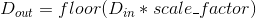 或
, 或 其中: 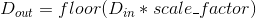 或 size[-3] 或
或 size[-2]或size[-1]
示例:
>>> inp
Variable containing:
(0 ,0 ,.,.) =
1 2
3 4
[torch.FloatTensor of size 1x1x2x2]
>>> m = nn.Upsample(scale_factor=2, mode='bilinear')
>>> m(inp)
Variable containing:
(0 ,0 ,.,.) =
1.0000 1.3333 1.6667 2.0000
1.6667 2.0000 2.3333 2.6667
2.3333 2.6667 3.0000 3.3333
3.0000 3.3333 3.6667 4.0000
[torch.FloatTensor of size 1x1x4x4]
>>> inp
Variable containing:
(0 ,0 ,.,.) =
1 2
3 4
[torch.FloatTensor of size 1x1x2x2]
>>> m = nn.Upsample(scale_factor=2, mode='nearest')
>>> m(inp)
Variable containing:
(0 ,0 ,.,.) =
1 1 2 2
1 1 2 2
3 3 4 4
3 3 4 4
[torch.FloatTensor of size 1x1x4x4]
UpsamplingNearest2d
class torch.nn.UpsamplingNearest2d(size=None, scale_factor=None)
对多个输入通道组成的输入信号进行2维最近邻上采样.
为了指定采样范围, 提供了 size 或 scale_factor 作为构造参数.
当给定 size, 输出图像的大小为 (h, w).
参数：
size (tuple, 可选)– 输出图片大小的整型元组(H_out, W_out)scale_factor (int, 可选)– 图像的 长和宽的乘子.
形状：
- 输入：
- 输出： 其中
示例:
>>> inp
Variable containing:
(0 ,0 ,.,.) =
1 2
3 4
[torch.FloatTensor of size 1x1x2x2]
>>> m = nn.UpsamplingNearest2d(scale_factor=2)
>>> m(inp)
Variable containing:
(0 ,0 ,.,.) =
1 1 2 2
1 1 2 2
3 3 4 4
3 3 4 4
[torch.FloatTensor of size 1x1x4x4]
UpsamplingBilinear2d
class torch.nn.UpsamplingBilinear2d(size=None, scale_factor=None)
对多个输入通道组成的输入信号进行2维双线性上采样.
为了指定采样范围, 提供了 size 或 scale_factor 作为构造参数.
当给定 size, 输出图像的大小为 (h, w).
参数：
size (tuple, 可选)– 输出图片大小的整型元组(H_out, W_out)scale_factor (int, 可选)– 图像的 长和宽的乘子.
形状：
- 输入：
- 输出： 其中
示例：
>>> inp
Variable containing:
(0 ,0 ,.,.) =
1 2
3 4
[torch.FloatTensor of size 1x1x2x2]
>>> m = nn.UpsamplingBilinear2d(scale_factor=2)
>>> m(inp)
Variable containing:
(0 ,0 ,.,.) =
1.0000 1.3333 1.6667 2.0000
1.6667 2.0000 2.3333 2.6667
2.3333 2.6667 3.0000 3.3333
3.0000 3.3333 3.6667 4.0000
[torch.FloatTensor of size 1x1x4x4]
DataParallel layers (multi-GPU, distributed) (数据并行层, 多 GPU 的, 分布式的)
DataParallel
class torch.nn.DataParallel(module, device_ids=None, output_device=None, dim=0)
在模块级别实现数据并行性.
此容器通过在批次维度中分块, 将输入分割到指定设备上, 从而并行化给定模块的应用程 序.在正向传递中, 模块被复制到每个设备上, 每个副本处理一部分输入.在向后传递期间, 来自每个副本的梯度变化被汇总到原始模块中.
batch size 应该大于 GPUs 的数量.同时也应该是 GPU 数量的整数倍, 以 便每个块大小相同(以便每个 GPU 处理相同数量的样本）.
引用 :使用 nn.DataParallel 替代 multiprocessing
允许将任意位置和关键字输入传入 DataParallel EXCEPT Tensors. 所有的变量将被分 散在指定的维度(默认为0）.原始类型将被广播, 但所有其他类型将是一个浅层副本, 如 果写入模型的正向传递, 可能会被损坏.
Args : module: 并行的模型 device_ids: CUDA devices(CUDA 驱动） (default: all devices) output_device: 输出设备位置 (default: device_ids[0]) 示例 ::
>>> net = torch.nn.DataParallel(model, device_ids=[0, 1, 2])
>>> output = net(input_var)
DistributedDataParallel
class torch.nn.parallel.DistributedDataParallel(module, device_ids=None, output_device=None, dim=0)
在模块级别实现分布式数据并行.
此容器通过在批次维度中分块, 将输入分割到指定设备上, 从而并行化给定模块的应用程序. 该模块被复制到每台机器和每个设备上, 每个这样的副本处理一部分输入.在向后传递期间, 来自每个节点的梯度被平均.
batch size 应该大于 GPUs 的数量.同时也应该是 GPU 数量的整数倍, 以便每个块大小 相同(以便每个 GPU 处理相同数量的样本）.
引用 :Basics](distributed.html#distributed-basics) 和 使用 nn.DataParallel 替代 multiprocessing. 对输入的约束和 [torch.nn.DataParallel 中一样.
创建这个类需要分布式包已经在 process group 模式下被初始化 (引用 torch.distributed.init_process_group()).
警告：
这个模块只能和gloo后端一起工作.
警告：
构造器, 转发方法和输出(或者这个模块的输出功能）的区分是分布式同步点.考虑到不同的 进程可能会执行不同的代码.
警告：
该模块假设所有参数在创建时都在模型中注册.之后不应该添加或删除参数.同样适用于缓冲区.
警告：
这个模块假定所有的缓冲区和梯度都是密集的.
警告：
这个模块不能用于 : func: torch.autograd.grad (即只有在参数的 .grad 属性中 累积梯度才能使用）.
注解：
参数永远不会在进程之间广播.模块在梯度上执行全部优化步骤, 并假定它们将以相同的方式在 所有进程中进行优化.缓冲区(e.g. BatchNorm stats）在等级0的过程中从模块广播到系统 中的每个迭代中的所有其他副本.
Args : module: 需要并行的模型 device_ids: CUDA devices (default: all devices) output_device: device location of output (default: device_ids[0]) 示例 ::
>>> torch.distributed.init_process_group(world_size=4, init_method='...')
>>> net = torch.nn.DistributedDataParallel(model)
Utilities (工具包)
clip_grad_norm
torch.nn.utils.clip_grad_norm(parameters, max_norm, norm_type=2)
接收一个包含 Variable 的可迭代对象, 对 Variable 的梯度按范数进行裁剪.
范数是对所有梯度进行计算的, 等价于把所有输入变量的梯度连接成一个向量, 然后对这个向量按范数进行裁剪. 梯度将会被原地修改.
参数：
parameters (Iterable[Variable])– 一个可迭代对象, 其包含将要进行梯度正规化的 Variablemax_norm (float 或 int)– 梯度的最大范数norm_type (float 或 int)– p 范数(指定 p ). 用'inf'表示无穷范数
返回值：梯度的范数 (视为单个向量的).
weight_norm
torch.nn.utils.weight_norm(module, name='weight', dim=0)
将权重归一化应用于给定模块中的指定参数. .
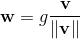
权重归一化是将权重张量的大小和方向分离的再参数化. 该函数会用两个参数代替 name (e.g. “weight”)所指定的参数. 在新的参数中, 一个指定参数的大小 (e.g. “weight_g”), 一个指定参数的方向. 权重归一化是通过一个钩子实现的, 该钩子会在 ~Module.forward 的每次调用之前根据大小和方向(两个新参数)重新计算权重张量.
默认情况下, dim=0, 范数会在每一个输出的 channel/plane 上分别计算. 若要对整个权重张量计算范数, 使用 dim=None.
参见 https://arxiv.org/abs/1602.07868
参数：
module (nn.Module)– 给定的 modulename (str, 可选)– 权重参数的 namedim (int, 可选)– 进行范数计算的维度
返回值：添加了权重归一化钩子的原 module
示例：
>>> m = weight_norm(nn.Linear(20, 40), name='weight')
Linear (20 -> 40)
>>> m.weight_g.size()
torch.Size([40, 1])
>>> m.weight_v.size()
torch.Size([40, 20])
remove_weight_norm
torch.nn.utils.remove_weight_norm(module, name='weight')
从模块中移除权重归一化/再参数化.
参数：
module (nn.Module)– 给定的 modulename (str, 可选)– 权重参数的 name
示例：
>>> m = weight_norm(nn.Linear(20, 40))
>>> remove_weight_norm(m)
PackedSequence
torch.nn.utils.rnn.PackedSequence(_cls, data, batch_sizes)
保存一个打包序列的 data 和 batch_sizes.
所有的 RNN 模块都接收这种被包裹后的序列作为它们的输入.
注解：
永远不要手动创建这个类的实例. 它们应当被 pack_padded_sequence() 这样的函数实例化.
变量：
data (Variable)– 包含打包后序列的 Variablebatch_sizes (list[int])– 包含每个序列步的 batch size 的列表
pack_padded_sequence
torch.nn.utils.rnn.pack_padded_sequence(input, lengths, batch_first=False)
将填充过的变长序列打包(压紧).
输入的形状可以是 TxBx* . T是最长序列长度(等于 lengths[0]), B是批量大小, *代表任意维度(可以是 0). 如果 batch_first=True , 那么相应的输入大小就是 BxTx* .
Variable 中保存的序列, 应该按序列长度的长短排序, 长的在前, 短的在后. 即 input[:,0] 代表的是最长的序列, input[:, B-1] 保存的是最短的序列.
注解：
只要是维度大于等于2的 input 都可以作为这个函数的参数. 你可以用它来打包 labels, 然后用 RNN 的输出和打包后的 labels 来计算 loss. 通过 PackedSequence 对象的 .data 属性可以获取 Variable.
参数：
input (Variable)– 变长序列被填充后的 batchlengths (list[int])– Variable 中每个序列的长度.batch_first (bool, 可选)– 如果是True, input 的形状应该是BxTx*.
返回值：一个 PackedSequence 对象.
pad_packed_sequence
torch.nn.utils.rnn.pad_packed_sequence(sequence, batch_first=False, padding_value=0.0)
填充打包过的变长序列.
这是 pack_padded_sequence() 的逆操作.
返回的 Varaible 的值的 size 是 TxBx*, T 是最长序列的长度, B 是 batch_size, 如果 batch_first=True, 那么返回值是 BxTx*.
Batch中的元素将会以它们长度的逆序排列.
参数：
sequence (PackedSequence)– 将要被填充的 batchbatch_first (bool, 可选)– 如果为True, 返回的数据的格式为BxTx*.padding_value (float, 可选)– 用来填充元素的值
返回值：一个 tuple, 包含被填充后的序列, 和 batch 中序列的长度列表.